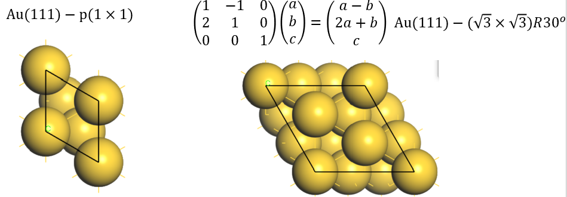

Tutorials¶
1. Quick Start¶
There are at lease five ways to run vaspkit under either the interactive user interface or command line mode. We take the generation of KPOINTS (task 102) as an example to illustrate the useage of vaspkit.
Just type
vaspkitin the terminal to launch the interactive user interface mode;vaspkit -task 102 -kpr 0.04to generate KPOINTS file with a reciprocal space resolution of \(2\pi \times 0.04\) \(Å^{-1}\). More details can be get by runvaspkit -help. Note that part of the functions is implemented;echo -e "102\n2\n0.04\n"| vaspkit;"(echo 102; echo 2; echo 0.04)|vaspkit;vi cmd.in (any file name if you want) including the following content:
102
2
0.04
and then run vaspkit <cmd.in.
if one wants to run vaspkit in batch mode, for example, to generate KPOINTS file in several sub-olders:
for i in `ls`
do echo ${i}
cd ${i}
vaspkit -task 102 -file POSCAR -kpr 0.04
cd ..
done
Or use echo -e command to input for VASPKIT:
echo -e "102\n2\n0.04" | vaspkit
means input 102, 2, 0.04 in turn in VASPKIT.
2. Generate Input Files¶
In order to perform a VASP calculation, usually one needs 4 files, INCAR, POSCAR, POTCAR and KPOINTS.
INCAR contains all keywords and tells VASP what to calculate;
POSCAR contains lattice parameters, atomic coordinates information, and atomic velocity information (for MD);
POTCAR is a pseudo potential file, which is USPP or PAW type;
KPOINTS, which can be included in INCAR, but not recommended for omitting. It contains K-points information in the reciprocal space at which the wave function integrates to obtain the charge density.
101) Customize INCAR File
102) Generate KPOINTS File for SCF Calculation
103) Generate POTCAR File with Default Setting
104) Generate POTCAR File with User Specified Potential
105) Generate POSCAR File from cif (no fractional occupations)
106) Generate POSCAR File from Material Studio xsd (retain fixes)
107) Reformat POSCAR File in Specified Order of Elements
108) Successive Procedure to Generate VASP Files and Check
109) Check All VASP Files
2.1 Generate INCAR¶
Run VASPKIT in the directory containing POSCAR. Enter 1 to select
the function VASP Input Files Generator, and then enter 101to
select customize INCAR File, you will get the following display
information:
101
+-------------------------- Warm Tips --------------------------+
You MUST Know What You Are Doing
Some Parameters in INCAR File Neet To Be Set/Adjusted Manually
+---------------------------------------------------------------+
======================== INCAR Options ==========================
ST) Static-Calculation SR) Standard Relaxation
MG) Magnetic Properties SO) Spin-Orbit Coupling
D3) DFT-D3 no-damping Correction H6) HSE06 Calculation
PU) DFT+U Calculation MD) Molecular Dynamics
GW) GW0 Calculation BS) BSE Calculation
DC) Elastic Constant EL) ELF Calculation
BD) Bader Charge Analysis OP) Optical Properties
EC) Static Dielectric Constant PC) Decomposed Charge Density
FD) Phonon-Finite-Displacement DT) Phonon-DFPT
NE) Nudged Elastic Band (NEB) DM) The Dimer Method
FQ) Frequence Calculations LR) Lattice Relaxation
0) Quit
9) Back
------------>>
Input Key-Parameters (STH6D3 means HSE06-D3 Static-Calcualtion)
Enter the words for specific task. The generated INCAR file will contain corresponding keywords that are required for this task.
For example, to do a single-point calculation (ST) with hybrid
functional HSE06 (H6) and DFT-D3 (D3) vdW correction, enter
STH6D3.
If enter LR, one will get a INCAR for lattice relaxation task with
detail comments:
Global Parameters
ISTART = 1 (Read existing wavefunction; if there)
# ISPIN = 2 (Spin polarised DFT)
# ICHARG = 11 (Non-self-consistent: GGA/LDA band structures)
LREAL = Auto (Projection operators: automatic)
# ENCUT = 400 (Cut-off energy for plane wave basis set, in eV)
PREC = Normal (Precision level)
LWAVE = .TRUE. (Write WAVECAR or not)
LCHARG = .TRUE. (Write CHGCAR or not)
ADDGRID= .TRUE. (Increase grid; helps GGA convergence)
# LVTOT = .TRUE. (Write total electrostatic potential into LOCPOT or not)
# LVHAR = .TRUE. (Write ionic+Hartree electrostatic potential into LOCPOT or not)
# NELECT = (No. of electrons: charged cells; be careful)
# LPLANE = .TRUE. (Real space distribution; supercells)
# NPAR = 4 (Max is no. nodes; don't set for hybrids)
# NWRITE = 2 (Medium-level output)
# KPAR = 2 (Divides k-grid into separate groups)
# NGX = 500 (FFT grid mesh density for nice charge/potential plots)
# NGY = 500 (FFT grid mesh density for nice charge/potential plots)
# NGZ = 500 (FFT grid mesh density for nice charge/potential plots)
Lattice Relaxation
NSW = 300 (number of ionic steps)
ISMEAR = 0 (gaussian smearing method )
SIGMA = 0.05 (please check the width of the smearing)
IBRION = 2 (Algorithm: 0-MD; 1-Quasi-New; 2-CG)
ISIF = 3 (optimize atomic coordinates and lattice parameters)
EDIFFG = -1.5E-02 (Ionic convergence; eV/AA)
PREC = Accurate (Precision level)
If one want a cleaner INCAR without comments, set the ~/.vaspkit
file with:
MINI_INCAR .TRUE.
The automatic generated INCAR for lattice relaxation task will be:
Global Parameters
ISTART = 1
LREAL = Auto
PREC = Normal
LWAVE = .TRUE.
LCHARG = .TRUE.
ADDGRID= .TRUE.
Lattice Relaxation
NSW = 300
ISMEAR = 0
SIGMA = 0.05
IBRION = 2
ISIF = 3
EDIFFG = -1.5E-02
PREC = Accurate
Users can also modify some parameters as they want from these INCAR file.
If there is already an INCAR file, the original INCAR will be
overwritten as default. Edit the ~/.vaspkit to change the INCAR
output settings. Simply change the SET_INCAR_WRITE_MODE line.
SET_INCAR_WRITE_MODE OVERRIDE # OVERRIDE, APPEND,BACK-UP-OLD,BACK-UP-NEW;
OVERRIDE |
New content added to the tail of original INCAR |
|---|---|
APPEND |
New content added to the tail of old INCAR |
BACK-UP-OLD |
back up the new INCAR |
BACK-UP-NEW |
the new INCAR to INCAR.new |
2.2 Generate KPOINTS¶
For self-consistent calculation, users need to prepare a KPOINTS file to specify density of K-points and the method for automatic k-mesh generation.
VASPKIT can generate KPOINTS file automatically with pre-exist POSCAR
file. Run VASPKIT option 1) VASP Input Files Generator, then enter
option 102 to generate KPOINTS file for SCF calculation. Then input
the K-mesh scheme according to the following display information:
102
======================= K-Mesh Scheme ==========================
1) Monkhorst-Pack Scheme
2) Gamma Scheme
0) Quit
9) Back
------------->>
Enter 1 to select the original Monkhorst-Pack scheme,
Enter 2 to select the Gamma centered Monkhorst-Pack scheme.
Then, VASPKIT will ask us to input KPT-Resolved Value between K-points in reciprocal cell in units of \(2\pi \times 0.04 Å^{-1}\).
2
-->> (01) Reading Structural Parameters from POSCAR File...
+-------------------------- Warm Tips --------------------------+
* Accuracy Levels: Gamma-Only: 0;
Low: 0.06~0.04;
Medium: 0.04~0.03;
Fine: 0.02-0.01.
* 0.03-0.04 is Generally Precise Enough!
+---------------------------------------------------------------+
Input KPT-Resolved Value (e.g., 0.04, in unit of 2*PI/Angstrom):
------------>>
Number of K-points increases when the KPT-resolved value (kpr) decreases. Number of K-points decreases when the kpr value increase. For each direction, the number is determined by
where \(\vec{b}_{i}\) are the reciprocal lattice vectors. These values are rounded to the next integer greater than or equal to N. The recommend value ~0.04 (\(2\pi \times 0.04 Å^{-1}\)) is enough for most system. This parameter is similar as the parameter KSPACING in INCAR. But the unit is different. Unit of KSPACING is \(Å^{-1}\), and the unit of VASPKIT is \(2\pi \times 0.04 Å^{-1}\).
The first line of output KPOINTS file show the users’ defined KPT-Resolved Value.
K-Mesh Generated with KP-Resolved Value (...): 0.020
0
Gamma
14 14 14
0.0 0.0 0.0
2.3 Generate POTCAR¶
When generating KPOINTS, POTCAR will also be generate automatically. Or
run VASPKIT 103 to generate POTCAR.
103
-->> (01) Reading Structural Parameters from POSCAR File...
-->> (02) Written POTCAR File with the Standard Potential!
It reads the elements information from POSCAR and combines the
corresponding POTCAR from the pseudo potential folders that you set in
~/.vaspkit.
GGA_PATH '~/POTCAR/GGA' # Path of GGA potential.
PBE_PATH '~/POTCAR/PBE' # Path of PBE potential.
LDA_PATH '~/POTCAR/LDA' # Path of LDA potential.
POTCAR_TYPE PBE # PBE, GGA or LDA;
RECOMMENDED_POTCAR .TRUE. # .TRUE. or .FALSE.;
Set POTCAR_TYPE to PBE, GGA, orLDA as you want. The
RECOMMENDED_POTCAR tag control whether to use recommended potentials
from VASP manual (Page. 195, 2018.10.29,
http://cms.mpi.univie.ac.at/vasp/vasp/Recommended_PAW_potentials_DFT_calculations_using_vasp_5_2.html).
If RECOMMENDED_POTCAR is .FALSE., POTCAR with no extensions will
be used. If RECOMMENDED_POTCAR is .TRUE., official recommended
POTCAR will be used.
POTCAR types:
No extensions “_”
_d. An extension d, treat the d semi core states as valence state._pvor_sv. The extensions_pvand_svimply that the p and s semi-core states are treated as valence states._hand_s. An extension_hor_simplies that the potential is harder or softer than the standard potential and hence requires a higher or lower energy cutoff.Pseudo hydrogen. ex:
H.5_GW. Used for GW calculation.
If one want to generate POTCAR for GW calculation, Set the GW_POTCAR
to .TRUE. in ~/.vaspkit.
GW_POTCAR .TRUE. # .TRUE. or .FALSE.;
VASPKIT also provide 104 option to generate POTCAR manually by
selecting the type of potential for each element.
104
-->> (1) Reading Structural Parameters from POSCAR File...
Auto detected POTCAR_TYPE is O, please type the one you want!
O_h
Auto detected POTCAR_TYPE is Ti, please type the one you want!
Ti_sv
-->> (2) Written POTCAR File with user specified Potential!
In this example, enter the customized type of potentials O and Ti.
Ti_sv was chosen for Ti and O_h was chosen for O. If there is no
user defined potential type in the list of potentials, VASPKIT will ask
user re-enter.
2.4 Generate POSCAR¶
VASPKIT can transform .cif and .xsd (Materials Studio format) files to
POSCAR format by option 105 and 106.
105 will call /vaspkit.1.00/utilities/cif2pos.py script.
105
Please type in the filename of cif->
al2o3.cif
Pleas input the order of element, `ENTER` for default!
Example: 'Al O' in this CIF
-->> (01) POSCAR has been generated...
106 will call /vaspkit.1.00/utilities/xsd2pos.py script
automatically. Note that the atom fix information in .xsd file is kept
when transform.
106
Build->Symmetry->Make P1,then select atoms to be fixed, Modify->Constraints->fi
x fractional position->
Please type in the filename of xsd->
CONTCAR-n2-3.xsd
-->> (01) POSCAR has been generated...
107 can reorder the elements in POSCAR file.
107
-->> (01) Reading Structural Parameters from POSCAR File...
Please Type the New Order of Elements to Sort.
(Tip: The Initial Order of Elements in POSCAR File is: Al O)
------------->>
O Al
-->> (02) Written POSCAR_REV File!
2.5 Input File Self Check¶
VASPKIT can do format correction and pseudo potential check by option
109. VASPKIT will automatically correct the INCAR and POSCAR formats
and check if the POTCAR and POSCAR are consistent.
3 Band Structure¶
VASPKIT is very powerful at pre- and post- process VASP band structure calculation.
3.1 Pre-process Band Structure (pure functional)¶
To do band structure calculation, one need to prepare a primitive cell and corresponding K points path (K-path) alone Irreducible Brillouin Zone. Irreducible Brillouin Zone is the first Brillouin zone reduced by all of the symmetries in the points group of the lattice (point group of the crystal). Recognize and select high symmetry points, and link them along edges of Irreducible Brillouin Zone.
For example, conventional FCC metal cell, Irreducible Brillouin Zone, and high symmetry points:
{kind=link}
Conventional BCC metal cell, Irreducible Brillouin Zone, and high symmetry points:
{kind=link}
K-path is not unique. Usually, It is unnecessary to select all lines
between all the high symmetry points. Representative and important line
are selected and written as line-mode in KPOINTS file. For large-scale
and high-throughout calculation, there should be a rule to define the
path from structural information. pymatgen and seeK-path provide some
solutions but only can be used for 3D system. VASPKIT provide a tool to
generate K-path for 1D (task 301), 2D (task 302), and 3D (task 303) materials based on a systematic rule:
Here are Brillouin zones for 2D materials (V. Wang, Y.-Y. Liang, Y. Kawazeo, W.-T. Geng, High-Throughput Computational Screening of Two-Dimensional Semiconductors, arXiv:1806.04285.)
{kind=link}
Other ways to get K-path automatically by using pymatgen（https://pymatgen.org/）Computational Materials Science 49 (2010) 299–312. seek-path（https://www.materialscloud.org/work/tools/seekpath）Computational Materials Science 128 (2017) 140–184.
For the suggested k-paths of bulk materials, VASPKIT uses the same algorithm as seek-path website (Y. Hinuma, G. Pizzi, Y. Kumagai, F. Oba, I. Tanaka, Band structure diagram paths based on crystallography, Comp. Mat. Sci. 128, 140 (2017). ).
Example: Single-layer MoS2¶
Band structure of single-layer MoS2 without spin polarization without spin-orbital coupling.
Prepare MoS2 POSCAR.
Because the K-path that generated by VASPKIT is based on standardized
primitive cell, so please first standardize the POSCAR. For 2D material:
Keep the center of z coordinates of 2D material at |c|/2.
(i.e. fractional coordinate z = 0.5 ). This could be accomplished by
VASPKIT 921 or 923. VASPKIT 923 standardizes 2D crystal
cell，(i) put the vacuum layer at z direction，(ii) put the 2D material
to the center of z coordination：
For 3D material, use VASPKIT 602 to generate a standardized
primitive cell, PRIMCELL.vasp, and replace the original POSCAR.
Here the standardized POSCAR of MoS2 :
MoS2
1.0
3.1659998894 0.0000000000 0.0000000000
-1.5829999447 2.7418363326 0.0000000000
0.0000000000 0.0000000000 18.4099998474
S Mo
2 1
Direct
0.000000000 0.000000000 0.413899988
0.000000000 0.000000000 0.586099982
0.666666687 0.333333343 0.500000000
92
+-------------------------- Warm Tips --------------------------+
Please Use These Features with CAUTION!
+---------------------------------------------------------------+
===================== 2D Materials Toolkit ======================
921) Center Aomic-Layer along z direction
922) Resize Vacuum Thickness
923) Standardize 2D Crystal Cell
926) Elastic Constants for 2D Materials
927) Valence and Conduction Band Edges Referenced to Vacuum Level
929) Summary for Relaxed 2D Structure
0) Quit
9) Back
------------>>
923
-->> (1) Reading Structural Parameters from POSCAR File...
-->> (2) Written POSCAR_NEW File!
Do geometry optimization, and then do a single-point self-consistent calculation to get the CHGCAR.
In a new folder run VASPKIT 302, get 2D K-path files: (Note:
please check the Space Group)
302
+-------------------------- Warm Tips --------------------------+
See An Example in vaspkit/examples/seek_kpath/graphene_2D.
This feature is still experimental & check the PRIMCELL.vasp file.
+---------------------------------------------------------------+
-->> (1) Reading Structural Parameters from POSCAR File...
+-------------------------- Summary ----------------------------+
The vacuum slab is supposed to be along c axis
Prototype: AB2
Total Atoms in Input Cell: 3
Lattice Constants in Input Cell: 3.166 3.166 18.410
Lattice Angles in Input Cell: 90.000 90.000 120.000
Total Atoms in Primitive Cell: 3
Lattice Constants in Primitive Cell: 3.166 3.166 18.410
Lattice Angles in Primitive Cell: 90.000 90.000 120.000
2D Bravais Lattice: Hexagonal
Space Group: 187
Point Group: 26 [ D3h ]
International: P-6m2
Symmetry Operations: 12
Suggested K-Path: (shown in the next line)
[ GAMMA-M-K-GAMMA ]
+---------------------------------------------------------------+
-->> (2) Written PRIMCELL.vasp file.
-->> (3) Written KPATH.in File for Band-Structure Calculation.
-->> (4) Written HIGH_SYMMETRY_POINTS File for Reference.
KPATH.in file include line-mode K-path. Copy it to KPOINTS is OK.
cp KPATH.in KPOINTS . The default intersections is 20.
K-Path Generated by VASPKIT
20
Line-Mode
Reciprocal
0.0000000000 0.0000000000 0.0000000000 GAMMA
0.5000000000 0.0000000000 0.0000000000 M
0.5000000000 0.0000000000 0.0000000000 M
0.3333333333 0.3333333333 0.0000000000 K
0.3333333333 0.3333333333 0.0000000000 K
0.0000000000 0.0000000000 0.0000000000 GAMMA
HIGH_SYMMETRY_POINTS include the information of all high symmetry points. VASPKIT do NOT promise the K-path is right, please compare the results from seeK-path website（https://www.materialscloud.org/work/tools/seekpath）
High-symmetry points (in fractional coordinates). You can check them with the seekpath database [https://www.materialscloud.org/work/tools/seekpath].
0.0000000000 0.0000000000 0.0000000000 GAMMA
0.3333333333 0.3333333333 0.0000000000 K
0.5000000000 0.0000000000 0.0000000000 M
If you use this module, please cite the following work:
[1] V. Wang, N. Xu, VASPKIT: A Pre- and Post-Processing Program for the VASP Code. http://vaspkit.sourceforge.net.
[2] V. Wang, Y.-Y. Liang, Y. Kawazeo, W.-T. Geng, High-Throughput Computational Screening of Two-Dimensional Semiconductors, arXiv:1806.04285.
Read the CHGCAR from single-point calculation and submit VASP band structure job.
INCAR example
##### initial I/O #####
SYSTEM = MoS2
ICHARG = 11
LWAVE = .TRUE.
LCHARG = .TRUE.
LVTOT = .FALSE.
LVHAR = .FALSE.
LELF = .FALSE.
LORBIT = 11
NEDOS = 1000
##### SCF #####
ENCUT = 500
ISMEAR = 0
SIGMA = 0.05
EDIFF = 1E-6
NELMIN = 5
NELM = 300
GGA = PE
LREAL = .FALSE.
PREC = Accurate
3.2 Post-process Band Structure (pure functional)¶
After calculation, do band structure post-process by VASPKIT option
21
Use 211 get the basic band structure. If there are python
environment with matplotlib module. VASPKIT can output a band.png
figure automatically. By default, the Fermi energy will be shifted to
the 0 eV.
211
-->> (01) Reading Input Parameters From INCAR File...
-->> (02) Reading Fermi-Energy from DOSCAR File...
ooooooooo The Fermi Energy will be set to zero eV ooooooooooooooo
-->> (03) Reading Energy-Levels From EIGENVAL File...
-->> (04) Reading Structural Parameters from POSCAR File...
-->> (05) Reading K-Paths From KPOINTS File...
-->> (06) Written BAND.dat File!
-->> (07) Written BAND_REFORMATTED.dat File!
-->> (08) Written KLINES.dat File!
-->> (09) Written KLABELS File!
-->> (10) Written BAND_GAP File!
If you want use the default setting, type 0, if modity type 1
0
/public1/home/pg2059/.local/lib/python2.7/site-packages/matplotlib/font_manager.py:1328: UserWarning: findfont: Font family [u'arial'] not found. Falling back to DejaVu Sans
(prop.get_family(), self.defaultFamily[fontext]))
-->> (11) Graph has been generated!
Output
BAND.dat，BAND_REFORMATTED.dat，KLINES.dat，KLABELS，BAND_GAP
files，
BAND.dat，BAND_REFORMATTED.dat files save the band
information, which can be open by ORIGIN directly.
BAND_REFORMATTED.dat: First column is the length of K-path in unit
of Å-1, and following columns are the energies of energy of each bands.
#K-Path Energy-Level
0.000 -14.278 -13.063 -5.798 -2.813 -2.813 -1.962 -1.693 ...
0.060 -14.268 -13.058 -5.787 -2.836 -2.802 -2.055 -1.710 ...
0.120 -14.239 -13.044 -5.752 -2.906 -2.769 -2.226 -1.761 ...
0.180 -14.190 -13.021 -5.695 -3.015 -2.716 -2.416 -1.840 ...
0.240 -14.123 -12.989 -5.619 -3.157 -2.642 -2.614 -1.943 ...
0.300 -14.039 -12.948 -5.528 -3.321 -2.817 -2.551 -2.064 ...
0.360 -13.938 -12.900 -5.428 -3.496 -3.023 -2.443 -2.195 ...
0.420 -13.823 -12.846 -5.329 -3.671 -3.232 -2.333 -2.322 ...
0.480 -13.696 -12.786 -5.244 -3.830 -3.441 -2.471 -2.190 ...
...
KLABELS file saves the positions of high symmetry points on band
structure figures:
K-Label K-Coordinate in band-structure plots
GAMMA 0.000
M 1.140
K 1.798
GAMMA 3.114
* Give the label for each high symmetry point in KPOINTS (KPATH.in) file. Otherwise, they will be identified as 'Undefined' in KLABELS file
BAND_GAP file save the information of band gap, VBM, CBM, and its
locations at reciprocal lattice,
+-------------------------- Summary ----------------------------+
Band Character: Direct
Band Gap (eV): 1.6743
Eigenvalue of VBM (eV): -0.2257
Eigenvalue of CBM (eV): 1.4485
HOMO & LUMO Bands: 9 10
Location of VBM: 0.333333 0.333333 0.000000
Location of CBM: 0.333333 0.333333 0.000000
+---------------------------------------------------------------+
NOTE: The VBM and CBM are subtracted by the Fermi Energy.
If users have python environment with matplotlib module, VASPKIT can
output a band.png figure automatically：
{kind=link}
212，213，214 get projected band structures：
Ensure the LORBIT = 10 or LORBIT = 11 parameter in INCAR to
output projection information.
212) Projected Band-Structure for Selected Atoms. select projected atoms:
Input number of selected atoms：1-4 7 8 24 or
elements：C Fe H
For example if you want to draw projected band structure on atom 1 and
2, input 1-2：
212
-->> (01) Reading Input Parameters From INCAR File...
-->> (02) Reading Fermi-Energy from DOSCAR File...
ooooooooo The Fermi Energy will be set to zero eV ooooooooooooooo
-->> (03) Reading Structural Parameters from POSCAR File...
-->> (04) Reading Energy-Levels From EIGENVAL File...
-->> (05) Reading Band-Weights From PROCAR File...
-->> (06) Reading K-Paths From KPOINTS File...
|---------------------------------------------------------------|
Input the element-symbol and/or atom-index to SUM [Total-atom: 3]
(Free Format is OK, e.g., C Fe H 1-4 7 8 24)
------------>>
1-2
-->> (07) Written SELECTED_ATOM_LIST File!
-->> (08) Written PBAND_A1.dat File!
-->> (09) Written PBAND_A2.dat File!
-->> (10) Written KLINES.dat File!
-->> (11) Written KLABELS File!
VASPKIT will output two files: PBAND_A1.dat and PBAND_A2.dat.
Each file include the projection information on select atoms, and there
weight on each angular momentum,
s py pz px dxy dyz dz2 dxz x2-y2 tot.
The first column is the length of K-path in unit of Å-1. Second column
is the energy of band. Following column are the projection of
lm-orbitals on this band. Last column is the total projection of
selected atom on this band.
#K-Path Energy s py pz px dxy dyz dz2 dxz x2-y2 tot
#Band-index 1
0.000 -14.278 0.275 0.000 0.005 0.000 0.000 0.000 0.000 0.000 0.000 0.281
0.060 -14.268 0.276 0.000 0.005 0.000 0.000 0.000 0.000 0.000 0.000 0.281
0.120 -14.239 0.276 0.000 0.005 0.000 0.000 0.000 0.000 0.000 0.000 0.281
0.180 -14.190 0.277 0.000 0.005 0.000 0.000 0.000 0.000 0.000 0.000 0.282
0.240 -14.123 0.278 0.000 0.005 0.000 0.000 0.000 0.000 0.000 0.000 0.284
0.300 -14.039 0.280 0.000 0.005 0.001 0.000 0.000 0.000 0.000 0.000 0.285
0.360 -13.938 0.281 0.000 0.005 0.001 0.000 0.000 0.000 0.000 0.000 0.288
0.420 -13.823 0.283 0.000 0.005 0.001 0.000 0.000 0.000 0.000 0.000 0.290
...
#Band-index 2
3.114 -13.063 0.315 0.000 0.000 0.000 0.000 0.000 0.000 0.000 0.000 0.316
3.045 -13.056 0.315 0.000 0.000 0.000 0.000 0.000 0.000 0.000 0.000 0.316
...
#Band-index 3
0.000 -5.798 0.018 0.000 0.125 0.000 0.000 0.000 0.000 0.000 0.000 0.143
0.060 -5.787 0.018 0.000 0.125 0.000 0.000 0.000 0.000 0.000 0.000 0.143
...
213) Projected Band-Structure for Each Element，projection on each elements:
213
-->> (1) Reading Input Parameters From INCAR File...
-->> (2) Reading Fermi-Level From DOSCAR File...
ooooooooo The Fermi Energy will be set to zero eV ooooooooooooooo
-->> (3) Reading Structural Parameters from POSCAR File...
-->> (4) Reading Energy-Levels From EIGENVAL File...
-->> (5) Reading Band-Weights From PROCAR File...
-->> (6) Reading K-Paths From KPOINTS File...
-->> (7) Written PBAND_S.dat File!
-->> (8) Written PBAND_Mo.dat File!
-->> (9) Written KLINES.dat File!
-->> (*) Written KLABELS File!
Format of PBAND_S.dat and PBAND_Mo.dat is same as
PBAND_A1.dat. These files can be open by origin:
{kind=link}
Select the first and second line, draw the original band structure first:
{kind=link}
Then find the position of high symmetry points from KLABELS:
GAMMA 0.000
M 1.139
K 1.797
GAMMA 3.113
Label those points:
{kind=link}
{kind=link}
Then, adjust the energy range. The original band structure without projection information shows as follow.
{kind=link}
From ORIGIN plot setup tag, add the atoms, elements, or orbitals projections on band.
{kind=link}
Select Bubble tag, and add the projection. click OK.
{kind=link}
{kind=link}
214) The Sum of Projected Band-Structure for Selected Atoms：
214
-->> (01) Reading Input Parameters From INCAR File...
-->> (02) Reading Fermi-Energy from DOSCAR File...
ooooooooo The Fermi Energy will be set to zero eV ooooooooooooooo
-->> (03) Reading Structural Parameters from POSCAR File...
-->> (04) Reading Energy-Levels From EIGENVAL File...
-->> (05) Reading Band-Weights From PROCAR File...
-->> (06) Reading K-Paths From KPOINTS File...
|---------------------------------------------------------------|
Input the element-symbol and/or atom-index to SUM [Total-atom: 3]
(Free Format is OK, e.g., C Fe H 1-4 7 8 24)
------------>>
1-2
-->> (07) Written SELECTED_ATOM_LIST File!
-->> (08) Written PBAND_SUM.dat File!
-->> (09) Written KLINES.dat File!
-->> (10) Written KLABELS File!
The output PBAND_SUM.dat file includes the sum projection of
selected atoms or elements. This is useful to investigate the layered
band and compare surface band and inner band.
3.3 Pre-process Band Structure (hybrid functional)¶
Besides the line-mode K-path, VASPKIT can also generate K-path with uniformed spacing between K points in units of 2\(\pi\)*Å-1, which can be used for hybrid functional band structure calculations. Such KPOINTS file contains two parts. First part is same as the self-consistent calculation with symmetry weighted K-points in Irreducilbe Brillouin Zone. And Second part is the 0-weighted K-points alone the k-path. To generate this KPOINTS file:
Same as pure functional calculation. Do geometry optimization. Run 302 (for 2D materials) or 303 (for 3D materials) to get:
standardized primitive cell (PRIMCELL.vasp)
line-mode k-path for pure functional band structure calculation (KPATH.in)
High-symmetry points in fractional coordinates. (HIGH_SYMMETRY_POINTS) You can check them with the seekpath database [https://www.materialscloud.org/work/tools/seekpath].
Run 251 to generate KPOINTS file for hybrid functional band-structure calculations. Input the KPT resolution values to determine density of k-mesh for SCF calculation and k-path for band structure calculation. Then VASPKIT will read KPATH.in file and generate the KPOINTS file for hybrid functional band-structure calculation.
Optional. Do a PBE SCF calculations based on the new generated KPOINTS file and get the wavefunctions, which can be read for next step hybrid functional calculation. Sometimes, this step reduce the SCF time of the next step hybrid functional calculation.
Do hybrid functional band structure calculation.
Example: single layer MoS2¶
After optimization. Run 302
302
+-------------------------- Warm Tips --------------------------+
See An Example in vaspkit/examples/seek_kpath/graphene_2D.
This feature is still experimental & check the PRIMCELL.vasp file.
+---------------------------------------------------------------+
-->> (1) Reading Structural Parameters from POSCAR File...
+-------------------------- Summary ----------------------------+
The vacuum slab is supposed to be along c axis
Prototype: AB2
Total Atoms in Input Cell: 3
Lattice Constants in Input Cell: 3.184 3.184 18.410
Lattice Angles in Input Cell: 90.000 90.000 120.000
Total Atoms in Primitive Cell: 3
Lattice Constants in Primitive Cell: 3.184 3.184 18.410
Lattice Angles in Primitive Cell: 90.000 90.000 120.000
2D Bravais Lattice: Hexagonal
Space Group: 187
Point Group: 26 [ D3h ]
International: P-6m2
Symmetry Operations: 12
Suggested K-Path: (shown in the next line)
[ GAMMA-M-K-GAMMA ]
+---------------------------------------------------------------+
-->> (2) Written PRIMCELL.vasp file.
-->> (3) Written KPATH.in File for Band-Structure Calculation.
-->> (4) Written HIGH_SYMMETRY_POINTS File for Reference.
Replace the old POSCAR by the new generated PRIMCELL.vasp:
cp PRIMCELL.vasp POSCAR
Primitive Cell
1.000000
3.18401832481292 0.00000000000000 0.00000000000000
-1.59200916240646 2.75744075540316 0.00000000000000
0.00000000000000 0.00000000000000 18.40999984740000
S Mo
2 1
DIRECT
0.0000000000000000 0.0000000000000000 0.4151505217091287 S1
0.0000000000000000 0.0000000000000000 0.5848494782908713 S2
0.6666666666666666 0.3333333333333333 0.5000000000000000 Mo1
KPATH.in is line-mode KPOINTS file:
K-Path Generated by VASPKIT.
20
Line-Mode
Reciprocal
0.0000000000 0.0000000000 0.0000000000 GAMMA
0.5000000000 0.0000000000 0.0000000000 M
0.5000000000 0.0000000000 0.0000000000 M
0.3333333333 0.3333333333 0.0000000000 K
0.3333333333 0.3333333333 0.0000000000 K
0.0000000000 0.0000000000 0.0000000000 GAMMA
Run 251 to generate KPOINTS file for hybrid functional band-structure calculations. Select (1) Monkhorst-Pack Scheme or (2) Gamma Scheme to generate k-mesh for SCF calculation.
Then input the resolution value of normal weighted K-Mesh and 0-weighted K-path, respectively. VASPKIT will write a new KPOINTS according to users’ input.
251
-->> (1) Reading Structural Parameters from POSCAR File...
======================= K-Mesh Scheme ==========================
1) Monkhorst-Pack Scheme
2) Gamma Scheme
0) Quit
9) Back
------------->>
2
+-------------------------- Warm Tips --------------------------+
Input Resolution Value to Determine K-Mesh for SCF Calculation:
(Typical Value: 0.03-0.04 is Generally Precise Enough)
------------>>
0.05
Input Resolution Value along K-Path for Band Calculation:
(Typical Value: 0.02-0.04 for DFT and 0.04-0.06 for hybrid DFT)
------------>>
0.05
+---------------------------------------------------------------+
-->> (2) Reading K-Paths From KPATH.in File...
+-------------------------- Summary ----------------------------+
K-Mesh for SCF Calculation: 7 7 1
The Number of K-Point along K-Path 1: 22
The Number of K-Point along K-Path 2: 13
The Number of K-Point along K-Path 3: 26
+---------------------------------------------------------------+
-->> (3) Written KPOINTS File!
Here, the resolution value of normal weighted K-Mesh and 0-weighted K-path is set to be 0.05. Output K-mesh for SCF Calculation: 7 7 1. And the number of k-points along each line of k-path: \(\Gamma\)-> M : 22, M -> K : 13, K -> \(\Gamma\) : 26. The KPOINTS file:
Parameters to Generate KPOINTS (Don't Edit This Line): 0.050 0.050 8 61 3 22 13 26
69
Reciprocal lattice
0.00000000000000 0.00000000000000 0.00000000000000 1
0.14285714285714 0.00000000000000 0.00000000000000 6
0.28571428571429 0.00000000000000 0.00000000000000 6
0.42857142857143 0.00000000000000 0.00000000000000 6
0.14285714285714 0.14285714285714 0.00000000000000 6
0.28571428571429 0.14285714285714 0.00000000000000 12
0.42857142857143 0.14285714285714 0.00000000000000 6
0.28571428571429 0.28571428571429 0.00000000000000 6
0.00000000000000 0.00000000000000 0.00000000000000 0
0.02380952380952 0.00000000000000 0.00000000000000 0
...
...
...
0.02666666666400 0.02666666666400 0.00000000000000 0
0.01333333333200 0.01333333333200 0.00000000000000 0
0.00000000000000 0.00000000000000 0.00000000000000 0
Do PBE calculation. Can be skip.
Do hybird functional band structure calculation. The detail of INCAR parameters are discussed in http://blog.wangruixing.cn/2019/05/20/hse/ , INCAR:
##### initial I/O #####
SYSTEM = Hybird Functional
ISTART = 1
ICHARG = 1
LWAVE = .TRUE.
LCHARG = .TRUE.
LVTOT = .FALSE.
LVHAR = .FALSE.
LELF = .FALSE.
LORBIT = 11
NEDOS = 1000
##### SCF #####
ENCUT = 500
ISMEAR = 0
SIGMA = 0.05
EDIFF = 1E-6
NELMIN = 5
NELM = 300
GGA = PE
LREAL = .FALSE.
# PREC = Accurate
# ISYM = 3
##### Geo opt #####
EDIFFG = -0.01
IBRION = 2
POTIM = 0.2
NSW = 0 # no Geo_opt
ISIF = 3 # 2 not optimize cell
#### HSE ####
LHFCALC = .TRUE.
AEXX = 0.25
HFSCREEN = 0.2
ALGO = ALL # or Damped
TIME = 0.4
3.4 Post-process Band Structure (hybrid functional)¶
Extract band structure information by 252. band data is saved in
BAND.datandBAND-REFORMATTED.datfiles. High-symmetry points positions on band structure figures are saved inKLABELS.
(Note: bug in 0.73 version, please use new version)
252
-->> (01) Reading Input Parameters From INCAR File...
-->> (02) Reading Fermi-Energy from DOSCAR File...
ooooooooo The Fermi Energy will be set to zero eV ooooooooooooooo
-->> (03) Reading Energy-Levels From EIGENVAL File...
-->> (04) Reading Structural Parameters from POSCAR File...
-->> (05) Reading K-Paths From KPATH.in File...
-->> (06) Written BAND.dat File!
-->> (07) Written BAND_REFORMATTED.dat File!
-->> (08) Written KLINES.dat File!
-->> (09) Written KLABELS File!
-->> (10) Written BAND_GAP File!
If you want use the default setting, type 0, if modity type 1
0
-->> (11) Graph has been generated!
if the python and matplotlib enviornment is set correctly. VASPKIT will
draw a band figure band.png automatically. Following parameters
should be set in ~/.vaspkit file.
PYTHON_BIN ~/anaconda3/bin/python3
PLOT_MATPLOTLIB .TURE.
{kind=link}
You can also draw the figure from BAND.dat or
BAND_REFORMATTED.dat by ORIGIN, which is described in Section 3.2.
By comparing with the line-mode of KPOINTS (option 302 and 303).
The biggest advantages of 25 is that the k spacing along K-path is
averaged, so that saves computational cost.
Versions prior to 0.72 took the same number of K-points for energy line, resulting in uneven K-distribution on different paths, as shown in the lift figure below. The latest version of VASPKIT supports automatic determination of K-points number on different energy band paths based on a given k-point interval, thus ensuring uniform spattering throughout the band calculation, as shown in right Figure below.
KPOINTS generated from vaspkit 251 keeps the spacing between every k
points. So, one can use less 0-weighted k points to get a similar
qualified band structure, and thus, take less time when doing band
structure calculations.
{kind=link}
To get projected hybrid functional band structure, please use 253，254，255：
Ensure the LORBIT = 10 or LORBIT = 11 parameter in INCAR to
output projection information.
253) Get Projected Band-Structure for Selected Atoms
254) Get Projected Band-Structure for Each ELement
255) Get the Sum of Projected Band-Structure for Selected Atoms
For example: by using 253, a free format input is available. You can input any atoms by its index and any elements symbol. Projected band structure will saved for each elements one by one.
-->> (01) Reading Input Parameters From INCAR File...
-->> (02) Reading Fermi-Energy from DOSCAR File...
ooooooooo The Fermi Energy will be set to zero eV ooooooooooooooo
-->> (03) Reading Structural Parameters from POSCAR File...
-->> (04) Reading Energy-Levels From EIGENVAL File...
-->> (05) Reading Band-Weights From PROCAR File...
-->> (06) Reading K-Paths From KPATH.in File...
|---------------------------------------------------------------|
Input the element-symbol and/or atom-index to SUM [Total-atom: 3]
(Free Format is OK, e.g., C Fe H 1-4 7 8 24)
------------>>
1-3
-->> (07) Written SELECTED_ATOM_LIST File!
-->> (08) Written PBAND_A1.dat File!
-->> (09) Written PBAND_A2.dat File!
-->> (10) Written PBAND_A3.dat File!
-->> (11) Written KLINES.dat File!
-->> (12) Written KLABELS File!
Elements projected band structure obtained by using 254,
254
-->> (01) Reading Input Parameters From INCAR File...
-->> (02) Reading Fermi-Energy from DOSCAR File...
ooooooooo The Fermi Energy will be set to zero eV ooooooooooooooo
-->> (03) Reading Structural Parameters from POSCAR File...
-->> (04) Reading Energy-Levels From EIGENVAL File...
-->> (05) Reading Band-Weights From PROCAR File...
-->> (06) Reading K-Paths From KPATH.in File...
-->> (07) Written PBAND_S.dat File!
-->> (08) Written PBAND_Mo.dat File!
-->> (09) Written KLINES.dat File!
-->> (10) Written KLABELS File!
All your input atoms will be sumed up and are projected to the band structure by using 255:
255
-->> (01) Reading Input Parameters From INCAR File...
-->> (02) Reading Fermi-Energy from DOSCAR File...
ooooooooo The Fermi Energy will be set to zero eV ooooooooooooooo
-->> (03) Reading Structural Parameters from POSCAR File...
-->> (04) Reading Energy-Levels From EIGENVAL File...
-->> (05) Reading Band-Weights From PROCAR File...
-->> (06) Reading K-Paths From KPATH.in File...
|---------------------------------------------------------------|
Input the element-symbol and/or atom-index to SUM [Total-atom: 3]
(Free Format is OK, e.g., C Fe H 1-4 7 8 24)
------------>>
1-2
-->> (07) Written SELECTED_ATOM_LIST File!
-->> (08) Written PBAND_SUM.dat File!
-->> (09) Written KLINES.dat File!
-->> (10) Written KLABELS File!
supplementary: band structure can also be down by pymatgen package:
{kind=link}
3.5 Effective Mass¶
For electrons or holes in a solid, the effective mass (m*) is a quantity that is used to simplify band structures by modeling the behavior of a free particle with that mass. At the highest energies of the valence band in semiconductors (Ge, Si, GaAs, …), and the lowest energies of the conduction band in semiconductors (GaAs, …), the band structure E(k) can be locally approximated as:
where E(k) is the energy of an electron at wavevector k in that band, E0 is a constant giving the edge of energy of that band. So m* can be calculated by following equation:
Usually, we are interested in the m* from one high symmetry point to another high symmetry point. So the direction of \(k_{i}\) and \(k_{j}\) are same, such as K -> M, K -> \(\Gamma\). To get the second-order partial derivative, KPOINTS file should include K points very near to that high symmetry point. VASPKIT can generate KPOINTS file for VASP calculation and get the effective mass automatically. (Note: Now, VASPKIT only support effective mass calculation for Non-Charged & Non-Magnetic Semiconductor!)
{kind=link}
Example: Single Layer MoS2 effective mass¶
Find out the band edges by band structure calculation. The VBM is at K, and the CBM is also at K.
Select the direction to do second-order derivative. Here, we select K -> M, K -> \(\Gamma\) to calculate their electron and hole effective mass.
Prepare POSCAR and VPKIT.in:
1 # "1" for pre-process (generate KPOINTS), "2" for post-process(calculate m*)
6 # number of points for quadratic function fitting.
0.015 # k-cutoff, unit Å-1.
2 # number of tasks for effective mass calculation
0.333333 0.3333333 0.000 0.000 0.000 0.000 K->Γ # Specified two K-points and direction
0.333333 0.3333333 0.000 0.500 0.000 0.000 K->M # Specified two K-points and direction
Run VASPKIT
912, and input the parameters for K-Mesh Scheme, and VASPKIT will generate a KPOINTS file based on the VPKIT.in file with 0-weight K-points.
+-------------------------- Warm Tips --------------------------+
Test ONLY for Non-Charged & Non-Magnetic Semiconductor!
+---------------------------------------------------------------+
-->> (01) Reading VPKIT.in File...
-->> (02) Reading Structural Parameters from POSCAR File...
======================= K-Mesh Scheme ==========================
1) Monkhorst-Pack Scheme
2) Gamma Scheme
0) Quit
9) Back
------------->>
2
+-------------------------- Warm Tips --------------------------+
- Accuracy Levels: Gamma-Only: 0;
Low: 0.06~0.04;
Medium: 0.04~0.03;
Fine: 0.02-0.01.
- 0.03-0.04 is Generally Precise Enough!
+---------------------------------------------------------------+
Input KPT-Resolved Value (e.g., 0.04, in unit of 2*PI/Angstrom):
------------>>
0.04
1
-->> (03) Written KPOINTS File!
-->> (04) Written INCAR file!
-->> (05) Written POTCAR File with the Standard Potential!
The generate the KPOINTS is:
Parameters to Generate KPOINTS (Don't Edit This Line): 0.0400 12 2 6
24
Reciprocal lattice
0.00000000000000 0.00000000000000 0.00000000000000 1
0.11111111111111 0.00000000000000 0.00000000000000 6
0.22222222222222 0.00000000000000 0.00000000000000 6
0.33333333333333 0.00000000000000 0.00000000000000 6
0.44444444444444 0.00000000000000 0.00000000000000 6
0.11111111111111 0.11111111111111 0.00000000000000 6
0.22222222222222 0.11111111111111 0.00000000000000 12
0.33333333333333 0.11111111111111 0.00000000000000 12
0.44444444444444 0.11111111111111 0.00000000000000 6
0.22222222222222 0.22222222222222 0.00000000000000 6
0.33333333333333 0.22222222222222 0.00000000000000 12
0.33333333333333 0.33333333333333 0.00000000000000 2
0.33333300000000 0.33333330000000 0.00000000000000 0 # K->Γ
0.32795808307727 0.33136593967371 0.00000000000000 0
0.32258316615454 0.32939857934742 0.00000000000000 0
0.31720824923180 0.32743121902113 0.00000000000000 0
0.31183333230907 0.32546385869484 0.00000000000000 0
0.30645841538634 0.32349649836855 0.00000000000000 0
0.33333300000000 0.33333330000000 0.00000000000000 0 # K->M
0.33673240318272 0.32574567174541 0.00000000000000 0
0.34013180636544 0.31815804349082 0.00000000000000 0
0.34353120954815 0.31057041523622 0.00000000000000 0
0.34693061273087 0.30298278698163 0.00000000000000 0
0.35033001591359 0.29539515872704 0.00000000000000 0
Submit VASP job.
Replace the first line of VPKIT.in by
2. Then re-run VASPKIT913to get the effective mass of electron and hole.
913
+-------------------------- Warm Tips --------------------------+
Test ONLY for Non-Charged & Non-Magnetic Semiconductor!
+---------------------------------------------------------------+
-->> (01) Reading VPKIT.in File...
-->> (02) Reading Structural Parameters from POSCAR File...
-->> (03) Reading Input Parameters From INCAR File...
-->> (04) Reading Energy-Levels From EIGENVAL File...
+-------------------------- Summary ----------------------------+
Effective-Mass is obtained by fitting a third order polynomial,
which yields masses are less sensitive to the employed k-points.
Band Index: LUMO = 10 HOMO = 9
Effective-Mass (in m0) Electron (Prec.) Hole (Prec.)
K-Path Index 1: K->Γ 0.480 (0.2E-07) -0.577 (0.2E-07)
K-Path Index 2: K->M 0.527 (0.8E-07) -0.705 (0.2E-06)
+---------------------------------------------------------------+
Kormányos et al. calculated the effective masses of electron and hole carriers for the MoS2 monolayers to be 0.44 and 0.54, respectively [see 2D Mater. 2 (2015) 049501]. Note: If the valence band and the conduction band bottom are degenerate, such as GaAs and GaN, it will be difficult to guarantee accuracy at this time.
3.6 Band-unfolding¶
The electronic structures of real materials are perturbed by various structural defects, impurities, fl?uctuations of the chemical composition in compound alloys and so on. In DFT calcualtions, these defects and incommensurate structures are usually investigated by using supercell (SC) models. However, interpretation of \(E(\vec{k})\) versus \(\vec{k}\) band structures is most effective within the primitive cell (PC). Popescu and Zunger [see PRL 104, 236403 (2010) and PRB 85, 085201 (2012)] proposed the effective band structures (EBS) method which can unfold the band structures of supercells into the Brillouin zone (BZ) of the correspoind primitive cell. Such band unfolding techniques greatly simplify the analysis of the results and enabling direct comparisons with experimental measurements, for example, angle-resolved photoemission spectroscopy (ARPES), often represented along the high-symmetry directions of the primtive cell BZ.
Next we will build a rectangle-like MoS\(_2\) supercell with single sulfur vacancy and perfom band unfolding calcualtion using VASP together with VASPKIT codes.
{kind=link}
First step: Prepare the following files;
POSCAR for monolayer MoS\(_2\)
primitive cell
MoS2-H.POSCAR
1.00000000000000000
3.1904063769892548 0.0000000000000000 0.0000000000000000
-1.5952031884946274 2.7629729709066906 0.0000000000000000
0.0000000000000000 0.0000000000000000 17.6585355706663840
Mo S
1 2
Direct
0.3333333429999996 0.6666666870000029 0.5000000000000000
0.6666666870000029 0.3333333429999996 0.4117002781430051
0.6666666870000029 0.3333333429999996 0.5882996918569924
KPATH.in file for MoS\(_2\)
primitive cell (not for supercell), you can genenate it by run vaspkit with task 302 for 2D or 303 for bulk, or edit it manually. We choose the K-Path of M-K-\(\Gamma\) for monolayer MoS2.
KPATH for MoS2
20
Line mode
Rec
0.00000000000 0.50000000000 0.00000000000 # M
0.33333333333 0.33333333333 0.00000000000 # K
0.33333333333 0.33333333333 0.00000000000 # K
0.00000000000 0.00000000000 0.00000000000 # GAMMA
INCAR file for static calculation，set LWAVE =.TRUE.. To aviod the error ’ERROR! Computed NPLANE= **** != input NPLANE= ****’, please set PREC=N or a medium/lower value of energy cuttoff.
SYSTEM = MoS2
ISTART = 1
LREAL = F
PREC = N
LWAVE = .TRUE.
LCHARG = F
ISMEAR = 0
SIGMA = 0.05
NELM = 60
NELMIN = 6
EDIFF = 1E-08
TRANSMAT.in file (optional). The content of this file is
Read transformation matrix from the TRANSMAT.in file if it exists.
2 0 0 # must be three integers
0 3 0 # must be three integers
0 0 3 # must be three integers
where the first line is the comment line, and the integers from second line to four lines are the elements of 3$:raw-latex:times`$3 the transmission matrix :math:`M, the relationship of lattice vectors between supercell \(E(\vec{A})\) satisfies \(E(\vec{a})\)
If the off-diagonal elements in \(M\) are zero, the lattice vectors of supercell will be parallel to those of primtivel cell.
Second step: Run vapskit with task 400 to generate SUPERCELL.vasp and TRANSMAT (if TRANSMAT.in not exist). We modify the SUPERCELL.vasp file by removing a sulfur atom to creat signle S vacancy (V:math:`_text{S}`) point defect;
The primitive cell of MoS\(_2\) monolayer belongs to hexagonal crystal system. We can build a rectangle-supercell by using vaspkit with task 400. If the TRANSMAT.in file does not exist, vaspkit will read the 9 elements of \(M\) by dialogue menu (see the following commands). Otherwise, the elements of \(M\) will be read from the TRANSMAT.in file.
vaspkit -task 400
+---------------------------------------------------------------+
| VASPKIT Version: 1.00.RC (17 Jun. 2019) |
| A Pre- and Post-Processing Program for VASP Code |
| Running VASPKIT Under Command-Line Mode |
+---------------------------------------------------------------+
-->> (01) Reading Structural Parameters from POSCAR File...
Enter the new lattice verctor a in terms of old:
(MUST be three integers, e.g., 1 2 3)
4 0 0
Enter the new lattice verctor b in terms of old:
2 4 0
Enter the new lattice verctor c in terms of old:
0 0 1
+-------------------------- Summary ----------------------------+
The Transformation Matrix P is:
4 0 0
2 4 0
0 0 1
Lattice Constants in New Cell: 12.762 11.052 17.659
Lattice Angles in New Cell: 90.00 90.00 90.00
Total Atoms in New Cell: 48
Volume of New Cell is 16 times of the Old Cell
+---------------------------------------------------------------+
-->> (02) Written SUPERCELL.vasp File
Third step: cp SUPERCELL.vasp POSCAR and cp TRANSMAT TRANSMAT.in (if TRANSMAT.in not exist) and run vaspkit with task 281 to generate KPOINTS file;
------------>>
28
+-------------------------- Warm Tips --------------------------+
See some examples in vaspkit/examples/band_unfolding.
Only Support KPOINTS file Generated by VASPKIT.
Please Set LWAVE= .TRUE. in the INCAR file.
+---------------------------------------------------------------+
================== Band-Unfolding ==============================
281) Generate KPOINTS File for Band-Unfolding Calculation
282) Calculate Effective Band Structure
0) Quit
9) Back
------------>>
281
-->> (01) Reading Structural Parameters from POSCAR File...
+---------------------------------------------------------------+
| Selective Dynamics is Activated! |
+---------------------------------------------------------------+
======================= K-Mesh Scheme ==========================
1) Monkhorst-Pack Scheme
2) Gamma Scheme
0) Quit
9) Back
------------->>
2
+-------------------------- Warm Tips --------------------------+
Input Resolution Value to Determine K-Mesh for SCF Calculation:
(Typical Value: 0.02-0.03 is Generally Precise Enough)
------------>>
0.03
Input Resolution Value along K-Path for Band Calculation:
(Typical Value: 0.02-0.04 for DFT and 0.04-0.06 for hybrid DFT)
------------>>
0.03
+---------------------------------------------------------------+
-->> (02) Readin Transformation Matrix from TRANSMAT.in file...
-->> (03) Reading K-Paths From KPATH.in File...
+-------------------------- Summary ----------------------------+
K-Mesh for SCF Calculation: 3 3 1 # Based on SC reciprocal lattice length
The Number of K-Point along K-Path 1: 21 # Based on PC reciprocal lattice length
The Number of K-Point along K-Path 2: 43 # Based on PC reciprocal lattice length
+---------------------------------------------------------------+
Forth step: Submit vasp job；
Fifth step: Run vaspkit with task 282 to get EBS；
------------>>
282
+-------------------------- Warm Tips --------------------------+
Current Version Only Support the Stardard Version of VASP code.
+---------------------------------------------------------------+
-->> (01) Reading the header information in WAVECAR file...
+--------------------- WAVECAR Header --------------------------+
SPIN = 1
NKPTS = 68
NBANDS = 252
ENCUT = 280.00
Coefficients Precision: Complex*8
Maximum number of G values: GX = 18, GY = 16, GZ = 25
Estimated maximum number of plane-waves: 30159
+---------------------------------------------------------------+
-->> (02) Start to read WAVECAR file, take your time ^.^
Percentage complete: 25.0%
Percentage complete: 50.0%
Percentage complete: 75.0%
Percentage complete: 100.0%
-->> (03) Readin Transformation Matrix from TRANSMAT.in file...
-->> (04) Reading Fermi-Energy from DOSCAR File...
ooooooooo The Fermi Energy will be set to zero eV ooooooooooooooo
-->> (05) Reading KPOINTS_MAPPING_TABLE.in file...
-->> (06) Reading K-Paths From KPATH.in File...
-->> (07) Start to Calculate Effective Band Structure...
Percentage complete: 25.0%
Percentage complete: 50.0%
Percentage complete: 75.0%
Percentage complete: 100.0%
-->> (08) Written EBS.dat File!
-->> (09) Written KLABELS File!
Last step: You can use vaspkit/examples/band_unfolding/eps_plot.py or other scripts to plot.
3.7 3D Band Structure¶
In solid-state physics, the most usual electronic band structure (or simply band structure) is 2D band structure, which shows the energy change along the K-path line.
VASPKIT can also do 3D band structure, which select K-path on a surface of Irreducilbe Brillouin zone. And calculate the K-dependent band energies on those K-points. This method is often used to 2D materials, such as graphene.
Example: Graphene 3D Band Structure¶
Prepare graphene POSCAR and INCAR files for SCF calculation as descript in Section 3.1
Run VASPKIT and select
231to generate a KPOINTS file for 3D band calculation. The execution interface is as follows. The generated KPOINTS contains 1-weighted KPOINTS and 0-weight KPOINTS (Note that in order to obtain a smooth 3D energy band, the resolution value used to generate the KPOINTS file should be set at around 0.01)
231
+-------------------------- Warm Tips --------------------------+
* Accuracy Levels: (1) Low: 0.04~0.03;
(2) Medium: 0.03~0.02;
(3) Fine: 0.02~0.01.
* 0.015 is Generally Precise Enough!
+---------------------------------------------------------------+
Input KP-Resolved Value (unit: 2*PI/Ang):
------------>>
0.015
-->> (01) Reading Structural Parameters from POSCAR File...
-->> (02) Written KPOINTS File!
Submit VASP job.
After the VASP calculation is complete, run VASPKIT again and enter the
232or233command. The233command can output the VBM band and CBM band to BAND.HOMO.grd and BAND.LUMO.grd.232can get the calculation data of any other band. Here we choose233:
------------>>
233
+-------------------------- Warm Tips --------------------------+
ONLY Reliable for Band-Structure Calculations!
+---------------------------------------------------------------+
-->> (1) Reading Input Parameters From INCAR File...
-->> (2) Reading Structural Parameters from POSCAR File...
-->> (3) Reading Fermi-Level From DOSCAR File...
ooooooooo The Fermi Energy will be set to zero eV oooooooooooooooo
-->> (4) Reading Energy-Levels From EIGENVAL File...
-->> (5) Reading Kmesh From KPOINTS File...
-->> (6) Written BAND.HOMO.grd File.
-->> (7) Written BAND.LUMO.grd File.
-->> (8) Written KX.grd and KY.grd Files.
run
python VASPKITdir/examples/3D_band/how_to_visual.pyto get the 3D band structure.
{kind=link}
3.8 Fermi Surface¶
In condensed matter physics, the Fermi surface is the surface in reciprocal space which separates occupied bands from unoccupied bands at zero temperature. The shape of the Fermi surface is derived from the periodicity and symmetry of the crystalline lattice and from the occupation of electronic energy bands.
Example: Cu Fermi Surface¶
prepare the optimized POSCAR of FCC Cu. Note that it must be the primitive cell.
Run VASPKIT and enter the
261command to generate the KPOINTS and POTCAR files for calculating the Fermi surface.
------------>>
261
+-------------------------- Warm Tips --------------------------+
\* Accuracy Levels: (1) Medium: 0.02~0.01;
(2) Fine: < 0.01;
\* 0.01 is Generally Precise Enough!
+---------------------------------------------------------------+
Input KPT-Resolved Value (unit: 2*PI/Angstrom):
------------>>
0.008
-->> (1) Reading Structural Parameters from POSCAR File...
-->> (2) Written KPOINTS File!
Submit VASP job.
After the VASP calculation is completed, run VASPKIT again, input
262command, and generate the FERMISURFACE.bxsf file containing the Fermi surface data.
------------>>
262
-->> (1) Reading Input Parameters From INCAR File...
-->> (2) Reading Structural Parameters from POSCAR File...
-->> (3) Reading Fermi-Level From DOSCAR File...
ooooooooo The Fermi Energy will be set to zero eV oooooooooooooooo
-->> (4) Reading Energy-Levels From EIGENVAL File...
-->> (5) Written FERMISURFACE.bxsf File!
Run the XcrySDen software and follow the steps below. The fifth band through the Fermi surface, so we choose Band Number 5, then click Selected, and then get the Fermi surface of Cu.
{kind=link}
{kind=link}
3.9 Transition Dipole Moment¶
The transition dipole moment (TDM) or transition moment, usually denoted for a transition between an initial state a and a final state b, is the electric dipole moment associated with the transition between the two states. In general the TDM is a complex vector quantity that includes the phase factors associated with the two states. Its direction gives the polarization of the transition, which determines how the system will interact with an electromagnetic wave of a given polarization, while the square of the magnitude gives the strength of the interaction due to the distribution of charge within the system. The SI unit of the transition dipole moment is the Coulomb-meter (Cm); a more conveniently sized unit is the Debye (D). The transition probabilities between the valence and the conduction band are revealed by the calculated sum of the squares of TDM (in unit of Debey\(^2\)).
We task cubic CsPbI\(_3\) perovskite phase as an example and present the PBE calculated band structures and corresponding TDM in figure below. This system has 44 valence electrons in all. Next we calcualte the squares of transition dipole moment from the highest valence band (band index 22) to the lowest conduction band (band index 23). It is found the results are well agreement with the previous finding (see Ref. J. Phys. Chem. Lett. 2017, 8, 2999−3007).
{kind=link}
The calculating process is very similar with the band structure calcuation except for setting LWAVE= .TRUE. in the INCAR file. More details on these calculations are given in vaspkit/examples/tdm.
------------>>
71
============================ Optical Options ====================
711) Linear Optical Spectrums
712) Transition Dipole Moment at Single kpoint
713) Transition Dipole Moment for DFT Band-Structure
0) Quit
9) Back
------------>>
713
+-------------------------- Warm Tips --------------------------+
See an example in vaspkit/examples/tdm.
ONLY Support KPOINTS created by VASPKIT for hybrid bandstructure.
+---------------------------------------------------------------+
======================= Band-Structure Mode ====================
1) DFT Band-Structure Calculation
2) Hybrid-DFT Band-Structure Calculation
------------->>
1
Please input TWO bands separated by spaces.
(e.g., 4 5 means to get TDM between 4 and 5 bands at all kpts)
------------>>
22 23
+-------------------------- Warm Tips --------------------------+
Current Version Only Support the Stardard Version of VASP code.
+---------------------------------------------------------------+
-->> (01) Reading the header information in WAVECAR file...
+--------------------- WAVECAR Header --------------------------+
SPIN = 1
NKPTS = 80
NBANDS = 36
ENCUT = 400.00
Coefficients Precision: Complex*8
Maximum number of G values: GX = 11, GY = 11, GZ = 11
Estimated maximum number of plane-waves: 5575
+---------------------------------------------------------------+
-->> (02) Start to read WAVECAR file, take your time ^.^
Percentage complete: 25.0%
Percentage complete: 50.0%
Percentage complete: 75.0%
Percentage complete: 100.0%
-->> (03) Reading K-Paths From KPOINTS File...
-->> (04) Start to calculate Transition Dipole Moment...
Percentage complete: 25.0%
Percentage complete: 50.0%
Percentage complete: 75.0%
Percentage complete: 100.0%
-->> (05) Written TDM.dat File!
If one want to calculate the square of TDM between two state at single k-point. Just run vaspkit with task 712, for example,
71
============================ Optical Options ====================
711) Linear Optical Spectrums
712) Transition Dipole Moment at Single kpoint
713) Transition Dipole Moment for DFT Band-Structure
0) Quit
9) Back
------------>>
712
+-------------------------- Warm Tips --------------------------+
See an example in vaspkit/examples/tdm.
Please Set LWAVE= .TRUE. in the INCAR file.
+---------------------------------------------------------------+
Input ONE kpoint and TWO bands separated by spaces.
(e.g., 1 4 5 means to get TDM between 4 and 5 band at 1st kpt)
------------>>
1 22 23
+-------------------------- Warm Tips --------------------------+
Current Version Only Support the Stardard Version of VASP code.
+---------------------------------------------------------------+
-->> (01) Reading the header information in WAVECAR file...
+--------------------- WAVECAR Header --------------------------+
SPIN = 1
NKPTS = 80
NBANDS = 36
ENCUT = 400.00
Coefficients Precision: Complex*8
Maximum number of G values: GX = 11, GY = 11, GZ = 11
Estimated maximum number of plane-waves: 5575
+---------------------------------------------------------------+
Square of TDM (Debye^2): X Y Z Total
0.000 201.617 0.000 201.617
Cleary, the calculate total-square of TDM at \(\text{X}\) point for cubic CsPbI\(_3\) is 201.62 Debey\(^2\).
4 Density of States¶
VASPKIT is very powerful at post-process DOS results. Set LORBIT =
10 or 11, VASP will output DOS and l-decomposed or lm-decomposed
projected DOS for every atoms to DOSCAR and vasprun.xml. VASPKIT can
extract those information as users’ input.
Merits:
Do not need to download DOSCAR or vasprun.xml. Direct extract useful DOS on server.
Selection way for PDOS is convenient. Elements, atoms, and orbitals can be selected and sumed as you want.
Automatic shift fermi energy to 0 eV. It can read the E-fermi energy form OUTCAR and shift the DOS data by E-fermi. If one do not want to do shift, just close it in
~/.vaspkit
SET_FERMI_ENERGY_ZERO .FALSE. # .TRUE. or .FALSE.;
Output file can be read by ORIGIN directly with no modification.
4.1 Extract and output DOS and PDOS¶
Option 11 is used to DOS post-process.
O p t i o n s |
Functions |
|
|---|---|---|
1 1 1 |
Get the total DOS |
Input: None.Output: TDOS.dat contains the total DOS; ITDOS.dat contains the integral total DOS.Spin up and down are written in one file. Example: Total dos of \(\Theta\)-Al2O3 unit cell |
1 1 2 |
Output projected DOS for selected atoms to separate files. |
Input: Input the element-symbol and/or atom-index to SUM [Total-atom: 80] (Free Format is OK, e.g., C Fe H 1-4 7 8 24).Output: SEL ECTED_ATOM_LIST;PDOS_A_UP(_DW), pdos file for each selected atoms;IPDOS_A_UP(_DW), integral pdos file for each selected atoms;Spin up and down are writen in different files. |
1 1 3 |
Output projected DOS for every elements to separate files. |
Input: None.Output: PDOS_Elements_UP (_DW).dat, pdos file for each elements (sum of all atoms of each element.)IPDOS_Elements_UP (_DW).datSpin up and down are writen in different files. |
1 1 4 |
Output sum of projected DOS for selected atoms to one file. |
Input: Input the element-symbol and/or atom-index to SUM [Total-atom: 80] (Free Format is OK, e.g., C Fe H 1-4 7 8 24).Output:SELEC TED_ATOM_LIST;PDOS_SUM_UP(_DW), pdos file for sum of selected atoms;IPDOS_A_UP(_DW), integral pdos;Spin up and down are writen in different files. |
1 1 5 |
Output sum of projected DOS for selected atoms and orbitals to one file. |
Input: Input the element-symbol and/or atom-index to SUM [Total-atom: 80] (Free Format is OK, e.g., C Fe H 1-4 7 8 24).Input the Orbitals to Sum. Which orbital? s py pz px dxy dyz dz2 dxz dx2 f-3 ~ f3, “all” for summing ALL.Output: PDOS_USER.dat Spin up and down are writen in one files. |
Example: PDOS of CO adsorption on Ni(100) surface.¶
Enter
/vaspkit.0.73/examples/LDOS_PDOS/Partial_DOS_of_CO_on_Ni_111_surface,
Run VASPKIT (113) Projected Density-of-States for Each Element,
VASPKIT will output PDOS_Ni.dat, PDOS_C.dat, and PDOS_O.dat,
which contain the PDOS information of Ni, C, and O:
{kind=link}
Run VASPKIT
(114) The Sum of Projected Density-of-States for Selected Atoms, and
then input 6 7, VASPKIT will output the sum PDOS of CO molecule.
Run VASPKIT
(115) The Sum of Projected DOS for Selected Atoms and orbitals. If
we want s and p orbtial of O, s and p orbtial of C, d orbtial of Ni.
Input the Symbol and/or Number of Atoms to Sum [Total-atom: 7]
(Free Format is OK, e.g., C Fe H 1-4 7 8 24),Press "Enter" if you want to end e
ntry!
------------>>
O
Input the Orbitals to Sum
Which orbital? s py pz px dxy dyz dz2 dxz dx2 f-3 ~ f3, "all" for summing ALL.
s
...
...
Input O - s - O - p - C - s - C - p - Ni - d - 'Enter' - 0, Then
PDOS_USER.dat file will generate in this folder, which contains:
#Energy O_s O_p C_s C_p Ni_d
-27.10266 0.00000 0.00000 0.00000 0.00000 0.00000
-26.92966 0.00000 0.00000 0.00000 0.00000 0.00000
-26.75566 0.00000 0.00000 0.00000 0.00000 0.00000
-26.58266 0.00000 0.00000 0.00000 0.00000 0.00000
...
...
{kind=link}
The Input the Symbol and/or Number of Atoms command accept free
format input. You can enter the 1-3 4 Ni to accumulate PDOS by
selecting elements 1, 2, 3, 4 and Ni. The Input the Orbitals to Sum
command only supports standard input. If you use LORBIT=10, only s p
d f can be selected. If you use LORBIT=11, s py pz px dxy dyz dz2
dxz dx2 f-3 f-2 f-1 f0 f1 f2 are also supported.
4.2 d-band Center¶
The DOS projected onto the d-states that interact with the adsorbate state can be characterized by the center of d-projected DOS.
VASPKIT option 503 can calculate d-band center for every atoms
directly from VASP DOS outputs. And users can set the the energy range
for calculation.
Example: Pt metal cell, the energy window is set up to the Fermi energy.
503
+-------------------------- Warm Tips --------------------------+
See An Example in vaspkit/examples/d_band_center.
d-Band Center is Sensitive to the Number of Unoccupied Band.
Anyway, the Trends are More Important than the Absolute Energies.
+---------------------------------------------------------------+
-->> (01) Reading Input Parameters From INCAR File...
-->> (02) Reading Fermi-Energy from DOSCAR File...
ooooooooo The Fermi Energy will be set to zero eV ooooooooooooooo
-->> (03) Reading DOS Data From DOSCAR File...
-->> (04) Reading Structural Parameters from POSCAR File...
+------------------------ Your Option --------------------------+
The default energy window of integration is [-11.82 24.30]
Do you want to change the change (Y/N)?
y
Please enter the new energy window with blank (e.g., -10 10)
-11.8 0
+---------------------------------------------------------------+
-->> (05) Written D_BAND_CENTER File!
the d-band center for every atoms and the total d-band center is writen
in D_BAND_CENTER file as following:
# Atom ID d-Band-Center (eV)
Pt1: -3.1184
Total: -3.1184
Notice:
The energy window of integration is [-11.80 0.00].
The calculated d-band-center presented here are referenced to Fermi level, i.e., E_F=0 eV.
5 Thermo Energy Correction¶
Calculation of the free energy change in catalysis is one of the most important thing. But VASP do not have module that can directly calculates molecular free energy. Thus, the free energy correction in the some publications is inconsistent, inaccurate. (Note: Computational chemistry programs such as Gaussian have a complete free energy calculation module.)
5.1 Gas Molecule Free Energy Correction¶
The equations used for computing thermochemical data for Gas in VASPKIT is equivalent to those in Gaussian. (https://gaussian.com/thermo/) The partition function from any component can be used to determine the entropy contribution S from that component:
When molar values are given \(n=N / N_{A}\), and based on Ideal gas approximation, \(N_{A} k_{B}=R\), We write the S as:
The internal thermal energy U can also be obtained from the partition function:
The partition functions of translational, electronic, rotational, vibrational contribution are calculate as the equations list in (https://gaussian.com/thermo/). Then the entropy correction and internal thermal energy correction are calculated at specific temperature and presure.
For linear molecules, degree of vibrational freedom is 3N - 5, VASPKIT will neglect smallest 5 frequencies. For non-linear molecules, degree of vibrational freedom is 3N - 6, VASPKIT will neglect smallest 6 frequencies.
VASPKIT also include zero-point energy (ZPE) in thermo energy correction from the frequency calculation OUTCAR.
The Gibbs free energy (G) and enthalpy (H) include ∆PV = ∆NRT based on ideal gas approximation.
The Gibbs free energy G can be derived with the help of the total entropy S,
At last, VASPKIT will output:
Zero-point energy \(\varepsilon_{\mathrm{ZPE}}\);
Thermal correction to U(T), = \(\varepsilon_{\mathrm{ZPE}}\) + \(\Delta U_{0 \rightarrow T}\)
Thermal correction to H(T), = \(\varepsilon_{\mathrm{ZPE}}\) + \(\Delta U_{0 \rightarrow T}\) + PV = \(\varepsilon_{\mathrm{ZPE}}\) + \(\Delta H_{0 \rightarrow T}\)
Thermal correction to G(T), = \(\varepsilon_{\mathrm{ZPE}}\) + \(\Delta U_{0 \rightarrow T}\) + PV + TS = \(\varepsilon_{\mathrm{ZPE}}\) + \(\Delta G_{0 \rightarrow T}\)
where \(\Delta U_{0 \rightarrow T}\), \(\Delta H_{0 \rightarrow T}\) , and \(\Delta G_{0 \rightarrow T}\) are interal energy, enthalpy, and Gibbs free energy difference between 0 K and T K.
Example: Thermo energy correction for O2 molecule:¶
Do a frequency calculation. After calculation, check the frequencies:
1 f = 46.979964 THz 295.183821 2PiTHz 1567.082879 cm-1 194.293584 meV
2 f = 1.952595 THz 12.268518 2PiTHz 65.131565 cm-1 8.075288 meV
3 f = 1.120777 THz 7.042052 2PiTHz 37.385108 cm-1 4.635164 meV
4 f/i= 0.006984 THz 0.043884 2PiTHz 0.232971 cm-1 0.028885 meV
5 f/i= 1.046106 THz 6.572876 2PiTHz 34.894327 cm-1 4.326347 meV
6 f/i= 1.294104 THz 8.131095 2PiTHz 43.166663 cm-1 5.351986 meV
Because of O2 is linear molecule, VASPKIT will neglect smallest five frequencies.
In the same folder, run VASPKIT
502. Input temperature(K), pressure(Atm), and spin multiplicity in turn.
502
+-------------------------- Warm Tips --------------------------+
See An Example in vaspkit/examples/thermo_correction/ethanol.
This Feature Was Contributed by Nan XU, Jincheng Liu and Sobereva.
Included Vibrations, Translation, Rotation & Electron contributions.
GAS molecules should not be with any fix.
-->> (01) Reading Structural Parameters from CONTCAR File...
-->> (02) Analyzing Molecular Symmetry Information...
Molecular Symmetry is: D(inf)h
Linear molecule found!
+---------------------------------------------------------------+
Please input Temperature(K)!
298.15
Please input Pressure(Atm)!
1
Please input Spin multiplicity!--(Number of Unpaired electron + 1)
3
------------>>
-->> (03) Extracting frequencies from OUTCAR...
-->> (04) Reading OUTCAR File...
-->> (05) Calculating Thermal Corrections...
U(T) = ZPE + Delta_U(0->T)
H(T) = U(T) + PV = ZPE + Delta_U(0->T) + PV
G(T) = H(T) - TS = ZPE + Delta_U(0->T) + PV - TS
Zero-point energy E_ZPE : 2.240 kcal/mol 0.097144 eV
Thermal correction to U(T): 3.724 kcal/mol 0.161475 eV
Thermal correction to H(T): 4.316 kcal/mol 0.187167 eV
Thermal correction to G(T): -10.302 kcal/mol -0.446723 eV
Entropy S : 205.141 J/(mol*K) 0.002126 eV
So, ZPE is 0.097144 eV. Thermal correction to U(T), H(T), and G(T) are 0.161475, 0.187167, and -0.446723 eV, respectively. The entropy correction is
To get the free energy of O2, add the G(T) to electronic energy:
G(O2) = -9.854 + -0.447 = -10.301 eV
5.2 Adsorbed Molecular Free Energy Correction¶
Unlike gas molecules, adsorbed molecules form chemical bonds with substrate, which limits the translational and rotational freedom of the adsorbed molecules. So the contribution of translation and rotation to entropy and enthalpy is significantly reduced (so called hindered translator / hindered rotor model). This does not mean no translational or rotational contribution.
One common method is to attribute the translational or rotational part of the contribution to vibration, that is, the 3N vibrations of the surface-adsorbing molecules (except the virtual frequency) are all used to calculate the correction of the thermo energy.
The small the vibration frequencies have large contribution to entropy. It is very likely that a small vibration frequency will lead to abnormal entropy and free energy correction. So, it suggests that when the free energy of the surface adsorption molecule is corrected, the contribution of the frequency below 50 cm-1 is calculated as 50 cm-1, and VASPKIT also does this. And VASPKIT neglects the electron motion because of its small contribution.
And the PV term is also delete. At last VASPKIT will output:
Zero-point energy \(\varepsilon_{\mathrm{ZPE}}\);
Thermal correction to U(T) = H(T) = \(\varepsilon_{\mathrm{ZPE}}\) + \(\Delta U_{0 \rightarrow T}\)
Thermal correction to G(T) = \(\varepsilon_{\mathrm{ZPE}}\) + \(\Delta U_{0 \rightarrow T}\) + TS = \(\varepsilon_{\mathrm{ZPE}}\) + \(\Delta G_{0 \rightarrow T}\)
Example: Thermo energy correction for adsorbed O on Au(111)¶
Fix all slab metal atoms, do frequency calculation for the adsorbed molecule. Check the frequencies:
$ grep cm OUTCAR
1 f = 10.904836 THz 68.517103 2PiTHz 363.746154 cm-1 45.098792 meV
2 f = 10.827330 THz 68.030119 2PiTHz 361.160834 cm-1 44.778253 meV
3 f = 10.751668 THz 67.554721 2PiTHz 358.637024 cm-1 44.465340 meV
In the same folder, run VASPKIT
501. Input temperature(K).
501
+-------------------------- Warm Tips --------------------------+
This Feature Was Contributed by Nan XU, Qiang LI and Jincheng LIU.
See An Example in vaspkit/examples/thermo_correction/ORR.
Only vibrations! No Translation & Rotation & Electron contributions.
+---------------------------------------------------------------+
Please Enter The Temperature (K):
------------>>
298.15
-->> (01) Reading OUTCAR File...
+-------------------------- Summary ----------------------------+
Neglect PV contribution to translation for adsorbed molecules.
To avoid abnormal entropy contribution,
frequencies less than 50 cm-1 are set to 50 cm-1.
U(T) = H(T) = ZPE + Delat_U(0->T)
G(T) = H(T) - TS = ZPE + Delat_U(0->T) - TS
Temperature (K): 298.1
Zero-point energy E_ZPE : 1.549 kcal/mol 0.067171 eV
Thermal correction to U(T): 2.206 kcal/mol 0.095670 eV
Thermal correction to H(T): 2.206 kcal/mol 0.095670 eV
Thermal correction to G(T): 1.207 kcal/mol 0.052342 eV
Entropy S : 14.021 J/(mol*K) 0.000145 eV
So, ZPE is 0.067171 eV. Thermal correction to U(T), H(T), and G(T) are 0.095670, 0.187167, and -0.446723 eV, respectively.
6 Elastic Properties¶
6.1 Determine elastic constants based on energy-strain method¶
Within the linear elastic region, the stress \(\boldsymbol{\sigma}\) response of solids to external loading strain \(\boldsymbol{\varepsilon}\) satisfies the generalized Hooke’s law and can be simplified in the Voigt notation
where the strain or stress are represented as a vector with 6 independent components respectively, i.e., \(1 \leq i, j \leq 6\). \(C_{i j}\) is the second order elastic stiffness tensor expressed by a 6 × 6 symmetric matrix in units of GPa. The elastic stiffness tensor \(C_{i j}\) can be determined based on the first-order derivative of the stress-strain curves.
An alternative approach to calculate theoretical elastic constants is based on the energy variation by applying small strains to the equilibrium lattice configuration. The elastic energy \(\Delta E\left(V,\left\{\varepsilon_{i}\right\}\right)\) of a solid under strain in the harmonic approximation is given by
where \(E\left(V,\left\{\varepsilon_{i}\right\}\right)\) and \(E\left(V_{0}, 0\right)\) are the total energies of the distorted and undistorted lattice cells, with the volume of \(V\) and \(V_0\) respectively. The energy-strain method corresponds that the elastic stiffness tensor is derived from the second-order derivative of the total energies versus strain. In general, the stress-strain method require higher computational precise to achieve the same accuracy as energy-strain method. Nevertheless, the former requires much smaller set of distortions than the latter. Considering that the energy-strain has less stress sensitivity than the stress-strain one, the former method has been implemented into the VASPKIT code.
{kind=link}
We take diamond as an example and calculate its elastic contants (vaspkit/examples/elastic/diamond_3D). Thera are three independent elastic constants for FCC crystal, \(\mathrm{C}_{11}\), \(\mathrm{C}_{12}\) and \(\mathrm{C}_{44}\). Thus, the elastic energy is given by
To determine the elastic constants for the cubic phase, we apply the tri-axial shear strain \(\varepsilon=(0,0,0, \delta, \delta, \delta)\), to the crystal. Then \(\Delta E=\frac{V_{0}}{2}\left(C_{44} \varepsilon_{4} \varepsilon_{4}+C_{44} \varepsilon_{5} \varepsilon_{5}+C_{44} \varepsilon_{6} \varepsilon_{6}\right)\) The \(C_{44}\) can be calculated from \(\frac{\Delta E}{V_0}=\frac{3}{2} C_{44} \delta^{2}\). Similarly, we appply \(\varepsilon=(\delta, \delta, 0,0,0,0)\) and get \(\Delta E=\frac{V}{2}\left(C_{11} \varepsilon_{1} \varepsilon_{1}+C_{11} \varepsilon_{2} \varepsilon_{2}+C_{12} \varepsilon_{1} \varepsilon_{2}+C_{12} \varepsilon_{2} \varepsilon_{1}\right)\)
Apply \(\varepsilon=(\delta, \delta, \delta, 0,0,0)\) to get \(\frac{\Delta E}{V_0}=\frac{3}{2}\left(C_{11}+2 C_{12}\right) \delta^{2}\)。
Finally, math::` mathrm{C}_{11}`, math::` mathrm{C}_{12}` and math::` mathrm{C}_{44}` can be calcauclated by solving these equations.
The relationship of lattice vectors between distorted and fully relaxed lattice cells is:
where math::` boldsymbol{I}` is the identity matrix, The strain tensor
\(\boldsymbol{\varepsilon}\) is defined by
Fisrt Step：Prepare the following files：
Prepare the fully-relaxed POSCAR file including the standard conventional cell of diamond. You can get the standard conventional cell by running vaspkit with task of 603/604;
Run vaspkit with task of 102 to generate KPOINTS with fine k-mesh.
Prepare INCAR as follows.
Global Parameters
ISTART = 0
LREAL = F
PREC = High
LWAVE = F
LCHARG = F
ADDGRID= .TRUE.
Electronic Relaxation
ISMEAR = 0
SIGMA = 0.05
NELM = 40
NELMIN = 4
EDIFF = 1E-08
Ionic Relaxation
NELMIN = 6
NSW = 100
IBRION = 2
ISIF = 2 （Must be 2）
EDIFFG = -1E-02
4，Prepare VPKIT.in file and set the value of firt line to 1 (1 means pre-processing)；
1 ! 1 for pre-processing; 2 for post-processing
3D ! 2D for two-dimentional, 3D for bulk
7 ! number of strain case
-0.015 -0.010 -0.005 0.000 0.005 0.010 0.015 ! Strain range
and run vaspkit-201
------------>>
201
-->> (01) Reading VPKIT.in File...
+-------------------------- Warm Tips --------------------------+
See an example in vaspkit/examples/elastic/diamond_3D,
Require the fully-relaxed and standardized Convertional cell.
+---------------------------------------------------------------+
-->> (02) Reading Structural Parameters from POSCAR File...
-> C44 folder created successfully!
-> strain_-0.015 folder created successfully!
-> strain_-0.010 folder created successfully!
-> strain_-0.005 folder created successfully!
-> strain_0.000 folder created successfully!
-> strain_+0.005 folder created successfully!
-> strain_+0.010 folder created successfully!
-> strain_+0.015 folder created successfully!
-> C11_C12_I folder created successfully!
-> strain_-0.015 folder created successfully!
-> strain_-0.010 folder created successfully!
-> strain_-0.005 folder created successfully!
-> strain_0.000 folder created successfully!
-> strain_+0.005 folder created successfully!
-> strain_+0.010 folder created successfully!
-> strain_+0.015 folder created successfully!
-> C11_C12_II folder created successfully!
-> strain_-0.015 folder created successfully!
-> strain_-0.010 folder created successfully!
-> strain_-0.005 folder created successfully!
-> strain_0.000 folder created successfully!
-> strain_+0.005 folder created successfully!
-> strain_+0.010 folder created successfully!
-> strain_+0.015 folder created successfully!
Second step: Batch performing DFT calucaltions using VASP code；
Third step: Modify the value of the first line in VPKIT.in file to 2 (2 means post-processing); and run vaspkit-201 again.You will get the following information,
------------>>
201
-->> (01) Reading VPKIT.in File...
+-------------------------- Warm Tips --------------------------+
See an example in vaspkit/examples/elastic/diamond_3D,
Require the fully-relaxed and standardized Convertional cell.
+---------------------------------------------------------------+
-->> (02) Reading Structural Parameters from POSCAR File...
-->> (03) Calculating the fitting coefficients of energy vs strain.
-->> Current directory: Fitting Precision
C44: 0.817E-09
C11_C12_I: 0.814E-08
C11_C12_II: 0.135E-07
+-------------------------- Summary ----------------------------+
Based on the Strain versus Energy method.
Crystal Class: m-3m
Space Group: Fd-3m
Crystal System: Cubic system
Including Point group classes: 23, 2/m-3, 432, -43m, 4/m-32/m
There are 3 independent elastic constants
C11 C12 C12 0 0 0
C12 C11 C12 0 0 0
C12 C12 C11 0 0 0
0 0 0 C44 0 0
0 0 0 0 C44 0
0 0 0 0 0 C44
Stiffness Tensor C_ij (in GPa):
1050.640 126.640 126.640 0.000 0.000 0.000
126.640 1050.640 126.640 0.000 0.000 0.000
126.640 126.640 1050.640 0.000 0.000 0.000
0.000 0.000 0.000 559.861 0.000 0.000
0.000 0.000 0.000 0.000 559.861 0.000
0.000 0.000 0.000 0.000 0.000 559.861
Compliance Tensor S_ij (in GPa^{-1}):
0.000977 -0.000105 -0.000105 0.000000 0.000000 0.000000
-0.000105 0.000977 -0.000105 0.000000 0.000000 0.000000
-0.000105 -0.000105 0.000977 0.000000 0.000000 0.000000
0.000000 0.000000 0.000000 0.001786 0.000000 0.000000
0.000000 0.000000 0.000000 0.000000 0.001786 0.000000
0.000000 0.000000 0.000000 0.000000 0.000000 0.001786
Elastic stability criteria as discussed in PRB 90, 224104 (2014):
Criteria (i) C11 - C12 > 0 meeted.
Criteria (ii) C11 + 2C12 > 0 meeted.
Criteria (iii) C44 > 0 meeted.
Average mechanical properties for polycrystalline:
+---------------------------------------------------------------+
| Scheme | Voigt | Reuss | Hill |
+---------------------------------------------------------------+
| Bulk modulus K (GPa) | 434.640 | 434.640 | 434.640 |
| Shear modulus G (GPa) | 520.716 | 516.130 | 518.423 |
| Young's modulus E (GPa) | 1116.342 | 1109.298 | 1112.824 |
| P-wave modulus (GPa) | 1128.929 | 1122.814 | 1125.871 |
| Poisson's ratio v | 0.072 | 0.075 | 0.073 |
| Bulk/Shear ratio | 0.835 | 0.842 | 0.838 |
+---------------------------------------------------------------+
Pugh Ratio: 1.193
Cauchy Pressure (GPa): -433.220
Universal Elastic Anisotropy: 0.044
Chung–Buessem Anisotropy: 0.004
Isotropic Poisson’s Ratio: 0.073
Longitudinal wave velocity (in m/s): 17945.173
Transverse wave velocity (in m/s): 12177.146
Average wave velocity (in m/s): 13280.911
Debye temperature (in K): 2212.889
References:
[1] Voigt W, Lehrbuch der Kristallphysik (1928)
[2] Reuss A, Z. Angew. Math. Mech. 9 49–58 (1929)
[3] Hill R, Proc. Phys. Soc. A 65 349–54 (1952)
[4] Debye temperature J. Phys. Chem. Solids 24, 909-917 (1963)
[5] Elastic wave velocities calculated using Navier's equation
The calcualted elastic contants are well agreement with the available experimental values, \(C_{11}=1079\) GPa, \(C_{12}=124\) GPa and \(C_{44}=578\) GPa. VASPKIT can also read elastic constants from OUTCAR/ELASTIC_TENSOR.in file and determine various mechanical properites and elastic stability criterion. For more details, see vaspkit/examples/elastic.
7 Optic Properties¶
The linear optical properties can be obtained from the frequency-dependent complex dielectric function \(\varepsilon(\omega)\)
where \(\varepsilon_{1}(\omega)\) and \(\varepsilon_{2}(\omega)\) are the real and imaginary parts of the dielectric function, and \(\omega\) is the photon frequency.
The frequency-dependent linear optical spectra, e.g., refractive index \(n(\omega)\), extinction coefficient \(\kappa(\omega)\), absorption coefficient \(\alpha(\omega)\), energy-loss function \(L(\omega)\), reflectivity \(R(\omega)\) can be calculated from the real \(\varepsilon_{1}(\omega)\) and \(\varepsilon_{2}(\omega)\) parts [See Ref. A. M. Fox, Optical Properties of Solids]:
In VASPKIT Ver. 1.00 or later, it is not necessary to run optical.sh to extract image and real parts of dielectric function from vasprun.xml at first step (optional). You can run vaspkit -task 711 to get the these linear optical spectrums at one shot. The program will read dielectric function from vasprun.xml directely if both REAL.in and IMAG.in files not exist. We take Si as an example and calcuculate its optical properties at GW0+BSE leve, as shown in figure below.
{kind=link}
------------>>
71
============================ Optical Options ====================
711) Linear Optical Spectrums
712) Transition Dipole Moment at Single kpoint
713) Transition Dipole Moment for DFT Band-Structure
0) Quit
9) Back
------------>>
711
+-------------------------- Warm Tips --------------------------+
See an example in vaspkit/examples/Si_bse_optical.
This module is NOT suitable for low-dimensional materials.
+---------------------------------------------------------------+
===================== Energy Unit ===============================
Which Energy Unit Do You Want to Adopt?
1) eV
2) nm
3) THz
------------>>
1
-->> (01) Reading Dielectric Function From vasprun.xml File...
-->> (02) Reading IMAG.in and REAL.in Files...
-->> (03) Written Optical Files Succesfully!
+---------------------------------------------------------------+
| * DISCLAIMER * |
| Check the Consistency of Your Results if Necessary |
| Any Suggestions for Improvements are Welcome |
| (^.^) GOOD LUCK (^.^) |
|---------------------------------------------------------------|
| We Would Appreciate if You Cite in Your Research with VASPKIT.|
| Ref. V. Wang, N. Xu, J.C. LIU, VASPKIT: A Pre- and Post-Proces|
| sing Program for the VASP Code. http://vaspkit.sourceforge.net|
+---------------------------------------------------------------+
8 Structure and Symmetry Tools¶
VASPKIT is powerful at structure edition. Read and modify the structural files.
8.1 Redefine Lattice¶
VASPKIT option 400 can build supercell and rotate the lattice
vector. It requires three coefficients for each new vector by following
equation:
A, B, and C are new lattice vectors, a, b, and c are old lattice vectors.
Example: Build \(\operatorname{Au}(111)-(\sqrt{3} \times \sqrt{3}) R 30^{\circ}\) slab from primitive slab
{kind=link}
Build a supercell with its length of new lattice vector equal to \(\sqrt{3}\)a.
400
-->> (01) Reading Structural Parameters from POSCAR File...
Enter the new lattice verctor a in terms of old:
(MUST be three integers, e.g., 1 2 3)
1 -1 0
Enter the new lattice verctor b in terms of old:
2 1 0
Enter the new lattice verctor c in terms of old:
0 0 1
+-------------------------- Summary ----------------------------+
The Transformation Matrix P is:
1 -1 0
2 1 0
0 0 1
Lattice Constants in New Cell: 4.995 4.995 17.064
Lattice Angles in New Cell: 90.00 90.00 60.00
Total Atoms in New Cell:
Volume of New Cell is 3 times of the Old Cell
8.2 Build Supercell¶
VASPKIT 401 can build supercell by three number C1, C2, C3.
For example, build supercell with length is 2 times in the a and b direction and keep the c vector.
401
===================== Structural File ===========================
1) POSCAR
2) CONTCAR
3) The Specified Filename
0) Quit
9) Back
------------>>
1
-->> (01) Reading Structural Parameters from POSCAR File...
+-------------------------- Warm Tips --------------------------+
Enter the repeated unit along a, b and c directions with space!
(MUST be three integers, e.g., 1 2 3)
------------>>
2 2 1
-->> (02) Written SC221.vasp File
8.3 Fix Atoms by Layers¶
VASP default structural optimization allows all atoms to move freely in all directions (x, y, z). In some cases, structural optimization calculations require to fix some atoms. For example, surface calculations with slab model need to fix some bottom atoms.
To fix atoms, the POSCAR seventh line should be switched to
selective dynamics (only the first character is relevant and must be
S or s). This mode allows to provide extra flags for each atom
signaling whether the respective coordinate(s) of this atom will be
allowed to change during the ionic relaxation. F means fix, and
T means not fix.
VASPKIT provides options 402 to fix atoms by layers:
Input the file name that we want to fix.
1for POSCAR,2for CONTCAR,3for specified name but should also be POSCAR format.Input a threshold (unit: Å) to separate layers. Only atomic layers’ z coordinates difference is bigger than the threshold, those layers can be recognized. Otherwise, it will be recognized to be one layer. VASPKIT shows some suggested threshold and its corresponding layers number.
Then VASPKIT will print the recognized layers number.
Choose the layers that we want to fix. VASPKIT will automitically fix those bottom layers and output a
POSCAR_FIXfile. Before VASP calcualtion,cp POSCAR_FIX POSCAR.
402
===================== Structural File ===========================
1) POSCAR
2) CONTCAR
3) The Specified Filename
0) Quit
9) Back
------------>>
1
-->> (01) Reading Structural Parameters from POSCAR File...
Threshold: 0.3 layers: 4
Threshold: 0.6 layers: 4
Threshold: 0.9 layers: 4
Threshold: 1.2 layers: 4
Threshold: 1.5 layers: 4
Please choose a threshold to separate layers->
1
Found 4 layers, choose how many layers to be fixed=>
2
Fixed atoms are: 1 4
-->> (02) Written POSCAR_FIX File!
8.4 Fix Atoms by Height¶
VASPKIT 403 can also fix atoms, but by a range of z coordinates.
Similar as the option 402, first select a structural file, and then
input two numbers to set the z coordinate range. Then, select the output
format Fractional or Cartesian. it will output POSCAR_FIX
file.
If the (1) Fractional coordinates is select, the input
z_min z_max numbers should be the z fractional coordination and the
output file POSCAR_FIX also is written as fractional style.
If the (2) Cartesian coordinates is select, the input
z_min z_max numbers should be the z Cartesian coordination and the
output file POSCAR_FIX also is written as Cartesian style.
403
===================== Structural File ===========================
1) POSCAR
2) CONTCAR
3) The Specified Filename
0) Quit
9) Back
------------>>
1
-->> (01) Reading Structural Parameters from POSCAR File...
+---------------------------------------------------------------+
| Selective Dynamics is Activated! |
+---------------------------------------------------------------+
Atoms between your chosen section in z direction will be fixed
Type z_min z_max, Note: z_min < z_max
0 5
Read and Write atomic coordinates as:
(1) Fractional coordinates
(2) Cartesian coordinates
2
Fixed atoms are: 1 4
-->> (02) Written POSCAR_FIX File!
8.5 Swap Axis of Lattice Vector¶
VASPKIT 407 can do swap two axis of lattice vector.
8.6 Symmetry Tools¶
VASPKIT can identify symmetry of crystal from POSCAR or CONTCAR by
601 or608, respectively.
For example \(\theta\)-Al2O3:
601
-->> (01) Reading Structural Parameters from POSCAR File...
+-------------------------- Summary ----------------------------+
Prototype: A2B3
Total Atoms: 10
Formula Unit: Al2O3 [ Alphabetically Listed: Al2O3 ]
Full Formula Unit: Al4O6
Crystal System: Monoclinic
Crystal Class: 2/m
Bravais Lattice: mC
Lattice Constants: 6.142 6.142 5.671
Lattice Angles: 76.387 103.613 152.294
Volume: 96.475
Density (g/cm3): 3.510
Space Group: 12
Point Group: 5 [ C2h ]
International: C2/m
Symmetry Operations: 4
If POSCAR is conventional cell, VASPKIT 602 can transfer it to
primitive Cell.
If POSCAR is primitive cell, VASPKIT 602 can transfer it to
conventional Cell.
VASPKIT can also identify point group of molecule from POSCAR 609,
For example: point group of O2 molecule is \(D_{\infty h}\):
6
=================== Symmetry Options ============================
601) Symmetry Finding for Crystals
602) Primitive Cell Finding
603) Conventional Cell Finding (experimental)
604) Standardize Crystal Cell
608) Summary for Relaxed-Structure
609) Symmetry Finding for Molecules and Clusters
0) Quit
9) Back
------------>>
609
-->> (01) Reading Structural Parameters from CONTCAR File...
-->> (02) Analyzing Molecular Symmetry Information...
Molecular Symmetry is: D(inf)h
9 Potential related¶
9.1 Planar Average Potential¶
Planar average for grid files is one of the basic function of VASPKIT. It supports all grid files of VASP output, such as CHGCAR, PARCHG, LOCPOT, ELFCAR. All such grid files are written by following commands in Fortran:
WRITE(IU,FORM) (((C(NX,NY,NZ),NX=1,NGXC),NY=1,NGYZ),NZ=1,NGZC)
{kind=link}
For one selected direction, such as z direction. VASPKIT do an average in XY plane on each NZ,
The output POTPAVG.dat contains two columns. First column is z
coordinate (in Å), Second column is Planar Average-Potential (in eV) or
Densitiy (in e).
Here, take LOCPOT as an example. It contains total local potential (in
eV) when LVTOT = .TRUE. exists in the INCAR file, or contains
electrostatic potential (in eV) when LVHAR = .TRUE. exists in the
INCAR file. Electrostatic potential is desirable for the evaluation of
the work-function, because the electrostatic potential converges more
rapidly to the vacuum level than the total potential. To get the
work-function, potential along z direction (i.e. slab normal direction)
must be averaged in the slab planes.
Hamiltonian of Kohn-Sham is:
Electrostatic potential is the summation of second (ionic) and third (hartree) parts of Hamiltonian .
Example, Work-function of Au(111) slab with five atomic layers.¶
Do an optimization and a single-point calculation to get the LOCPOT file, single-point INCAR as following:
##### initial parameters I/O #####
SYSTEM = Au
NCORE = 5
ISTART = 1
ICHARG = 1
LWAVE = .TRUE.
LCHARG = .TRUE.
LVTOT = .FALSE.
LVHAR = .TRUE.
LELF = .FALSE.
#### Electronic Relaxation ####
ENCUT = 400
ISMEAR = 1
SIGMA = 0.2
EDIFF = 1E-6
NELMIN = 5
NELM = 300
GGA = PE
LREAL = Auto
IDIPOL = 3
Run VASPKIT
426function, and select the surface normal direction:
426
+-------------------------- Warm Tips --------------------------+
You MUST Know What You are Doing
Check Convergence of Planar Average Value on Vacuum-Thickness!
+---------------------------------------------------------------+
===================== Specified Direction =======================
Which Direction is for the Planar Average?
1) x Direction
2) y Direction
3) z Direction
0) Quit
9) Back
------------>>
3
-->> (1) Reading Structural Parameters from LOCPOT File...
-->> (2) Reading Local Potential From LOCPOT File...
-->> (3) Written POTPAVG.dat File!
+-------------------------- Warm Tips --------------------------+
Check the Convergence of Vacuum-Level Versus Vacuum Thickness!
+---------------------------------------------------------------+
+-------------------------- Summary ----------------------------+
Vacuum-Level (eV): 6.695
+---------------------------------------------------------------+

{kind=link}
So, the Vacuum-Level is 6.695, POTPAVG.dat as following:
# Planar Distance (in Angstrom), Planar Average-Potential (in eV) or -Densitiy (in e)
0.0000 0.27377302E+01
0.1025 0.94832051E+00
0.2049 -0.13842911E+01
0.3074 -0.40872693E+01
0.4099 -0.69356914E+01
0.5123 -0.96882699E+01
0.6148 -0.12150765E+02
0.7172 -0.14164741E+02
...
Get the fermi level by:
grep E-fermi OUTCAR
E-fermi : 1.5199 XC(G=0): -6.7056 alpha+bet : -6.4642
Draw the Plane-averaged electrostatic potential figure.
So, work function can be calculated as:
\(\Phi\) = 6.695 - 1.5199 = 5.1751 eV
9.2 Macroscopic Averaged Potential¶
Besides planar averaged potential , VASPKIT can also calculate macroscopic-averaged potential, which is obtained by converging the planar averaged potential with a moving average. e.g. If one want to do planar-averaged potential in z-direction, use z = average(x, y) for every z. If one want to do macroscopic-averaged potential in z-dirction, use z = average(x, y, z ± \(\Delta\)z’) for every z, where 2\(\Delta\)z’ is the layer distance for repeat structures.
For example: MoS2/WS2 heterogeneous junction.
Do a single-point calculation with
LVHAR = .TRUE.,Run VASPKIT
427to obtain planar averaged potential and macroscopic averaged potential from LOCPOT.
Select which direction to do planar average?
Input the period length to calculate macroscopic average. (To accelerate the convergence, this value should be close to and smaller than the layer distance)
Input iteration number to get smoother macroscopic curve.
427
+-------------------------- Warm Tips --------------------------+
You MUST Know What You are Doing
Check Convergence of Planar Average Value on Vacuum-Thickness!
+---------------------------------------------------------------+
===================== Specified Direction =======================
Which Direction is for the Planar Average?
1) x Direction
2) y Direction
3) z Direction
0) Quit
9) Back
------------>>
1
-->> (01) Reading Structural Parameters from LOCPOT File...
-->> (02) Reading Local Potential From LOCPOT File...
Please input the period length to calculate macroscopic average:
(Typical value: the minimum length of repeated unit.)
------------>>
1.5
Please input iteration number to get smoother macroscopic curve:
(Must be integer. You can gradually increase from 1 to 3.)
------------>>
3
-->> (03) Written PLANAR_AVERAGE.dat File!
+-------------------------- Summary ----------------------------+
Maximum of macroscopic average: 0.099
Minimum of macroscopic average: -0.101
+---------------------------------------------------------------+
-->> (04) Written MACROSCOPIC_AVERAGE.dat File!
Step 3. Draw graphs from the output MACROSCOPIC_AVERAGE.dat, and
PLANAR_AVERAGE.dat
{kind=link}

{kind=link}
{kind=link}
{kind=link}
{kind=link}
{kind=link}
11 Other Functions¶
11.1 Molecular Dynamics process¶
721 calculate the Mean Squared Displacement (MSD) based on VASP MD
results. First prepare a reference structure file POSCAR.ref. Then
run VASPKIT 721 to calculate MSD. The output MSD.dat contains
displacement information |x|, |y|, |z|, and MSD, RMSD.
# ion_step |dx| |dy| |dz| MSD sqrt(MSD)
1 0.0000016 0.0000011 0.0000019 0.0000000 0.0000001
2 0.1724941 0.2677518 0.2270937 0.0001325 0.0115120
3 0.3367914 0.5283185 0.4461284 0.0005124 0.0226364
4 0.4918222 0.7752755 0.6499894 0.0010922 0.0330486
5 0.6370632 1.0074569 0.8382370 0.0018188 0.0426475
6 0.7959320 1.2340219 1.0093023 0.0026613 0.0515876
7 0.9545851 1.4665808 1.1630884 0.0036234 0.0601945
8 1.1064692 1.6957629 1.3186163 0.0047342 0.0688057
9 1.2477962 1.9293770 1.4885940 0.0060285 0.0776432
ATOM_DISPLACEMENT.dat contains displacement and RMSD information for
each atoms.
722 calculate the Radial Distribution Function (RDF) also based on
VASP MD results.
11.2 File Format Transfer¶
From |
to |
VASPKIT Option |
|---|---|---|
XDATCAR |
PDB |
405 |
POSCAR/CONTCAR |
POSCAR (with Cartesian Coordinates) |
4061 |
POSCAR (with Fractional Coordinates) |
4062 |
|
CIF (POSCAR.cif) |
4063 |
|
ATAT (lat.in) (experimental) |
4064 |
|
XCrySDen (POSCAR.xsf) |
4065 |
|
Quantum-Espresso (pwscf.in) |
4066 |
|
Elk (elk.in) |
4067 |
|
Siesta (POSCAR.fdf) |
4068 |
|
PDB Format (POSCAR.pdb) |
4069 |
|
CIF |
POSCAR |
105 |
xsd |
POSCAR |
106 |
Bader results |
pqr |
508 |
CHGCAR/PARCHG |
XcrySDen (.xsf) format |
318 |
Gaussian (.cube) format |
319 |
|
LOCPOT/ELFCAR |
XcrySDen (.xsf) format |
428 |
XcrySDen (.xsf) format |
429 |